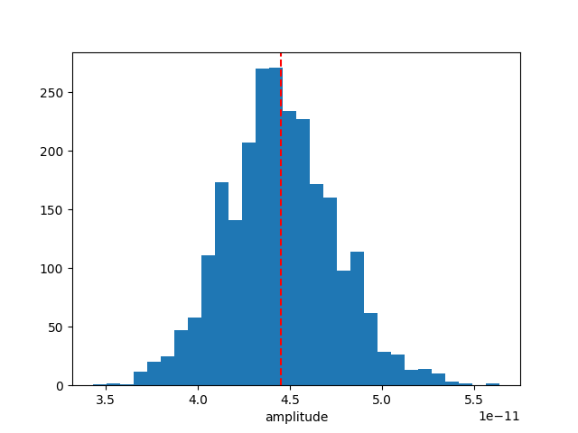

Note
Go to the end to download the full example code. or to run this example in your browser via Binder
Bayesian analysis with nested sampling#
A demonstration of a Bayesian analysis using the nested sampling technique.
Context#
1. Bayesian analysis#
Bayesian inference uses prior knowledge, in the form of a prior distribution, in order to estimate posterior probabilities which we traditionally visualise in the form of corner plots. These distributions contain more information than a maximum likelihood fit as they reveal not only the “best model” but provide a more accurate representation of errors and correlation between parameters. In particular, non-Gaussian degeneracies are complex to estimate with a maximum likelihood approach.
2. Limitations of the Markov Chain Monte Carlo approach#
A well-known approach to estimate this posterior distribution is the Markov Chain Monte Carlo (MCMC). This uses an ensemble of walkers to produce a chain of samples that after a convergence period will reach a stationary state. Once convergence is reached, the successive elements of the chain are samples of the target posterior distribution. However, the weakness of the MCMC approach lies in the “Once convergence” part. If the walkers are started far from the best likelihood region, the convergence time can be long or never reached if the walkers fall in a local minima. The choice of the initialisation point can become critical for complex models with a high number of dimensions and the ability of these walkers to escape a local minimum or to accurately describe a complex likelihood space is not guaranteed.
3. Nested sampling approach#
To overcome these issues, the nested sampling (NS) algorithm has gained traction in physics and astronomy. It is a Monte Carlo algorithm for computing an integral of the likelihood function over the prior model parameter space introduced in Skilling, 2004. The method performs this integral by evolving a collection of points through the parameter space (see recent reviews from Ashton et al., 2022, and Buchner, 2023). Without going into too many details, one important specificity of the NS method is that it starts from the entire parameter space and evolves a collection of live points to map all minima (including multiple modes if any), whereas Markov Chain Monte Carlo methods require an initialisation point and the walkers will explore the local likelihood. The ability of these walkers to escape a local minimum or to accurately describe a complex likelihood space is not guaranteed. This is a fundamental difference with MCMC or Minuit which will only ever probe the vicinity along their minimisation paths and do not have an overview of the global likelihood landscape. The analysis using the NS framework is more CPU time consuming than a standard classical fit, but it provides the full posterior distribution for all parameters, which is out of reach with traditional fitting techniques (N*(N-1)/2 contour plots to generate). In addition, it is more robust to the choice of initialisation, requires less human intervention and is therefore readily integrated in pipeline analysis. In Gammapy, we used the NS implementation of the UltraNest package (see here for more information), one of the leading package in Astronomy (already used in Cosmology and in X-rays). For a nice visualisation of the NS method see here : sampling visualisation. And for a tutorial of UltraNest applied to X-ray fitting with concrete examples and questions see : BXA Tutorial.
Note: please cite UltraNest if used for a paper
If you are using the “UltraNest” library for a paper, please follow its citation scheme: Cite UltraNest.
Proposed approach#
In this example, we will perform a Bayesian analysis with multiple 1D spectra of the Crab nebula data and investigate their posterior distributions.
Setup#
As usual, we’ll start with some setup …
import matplotlib.pyplot as plt
import numpy as np
import astropy.units as u
from gammapy.datasets import Datasets
from gammapy.datasets import SpectrumDatasetOnOff
from gammapy.modeling.models import (
SkyModel,
UniformPrior,
LogUniformPrior,
)
from gammapy.modeling.sampler import Sampler
Loading the spectral datasets#
Here we will load a few Crab 1D spectral data for which we will do a fit.
Model definition#
Now we want to define the spectral model that will be fitted to the data. The Crab spectra will be fitted here with a simple powerlaw for simplicity.
model = SkyModel.create(spectral_model="pl", name="crab")
Warning
Priors definition: Unlike a traditional fit where priors on the parameters are optional, here it is inherent to the Bayesian approach and are therefore mandatory.
In this case we will set (min,max) prior that will define the
boundaries in which the sampling will be performed.
Note that it is usually recommended to use a LogUniformPrior for
the parameters that have a large amplitude range like the
amplitude parameter.
A UniformPrior means that the samples will be drawn with uniform
probability between the (min,max) values in the linear or log space
in the case of a LogUniformPrior.
model.spectral_model.amplitude.prior = LogUniformPrior(min=1e-12, max=1e-10)
model.spectral_model.index.prior = UniformPrior(min=1, max=5)
datasets.models = [model]
print(datasets.models)
DatasetModels
Component 0: SkyModel
Name : crab
Datasets names : None
Spectral model type : PowerLawSpectralModel
Spatial model type :
Temporal model type :
Parameters:
index : 2.000 +/- 0.00
amplitude : 1.00e-12 +/- 0.0e+00 1 / (TeV s cm2)
reference (frozen): 1.000 TeV
Defining the sampler and options#
As for the Fit object, the Sampler object can receive
different backend (although just one is available for now).
The Sampler comes with “reasonable” default parameters, but you can
change them via the sampler_opts dictionary.
Here is a short description of the most relevant parameters that you
could change :
live_points: minimum number of live points throughout the run. More points allow to discover multiple peaks if existing, but is slower. To test the Prior boundaries and for debugging, a lower number (~100) can be used before a production run with more points (~400 or more).frac_remain: the cut-off condition for the integration, set by the maximum allowed fraction of posterior mass left in the live points vs the dead points. High values (e.g., 0.5) are faster and can be used if the posterior distribution is a relatively simple shape. A low value (1e-1, 1e-2) is optimal for finding peaks, but slower.log_dir: directory where the output files will be stored. If set to None, no files will be written. If set to a string, a directory will be created containing the ongoing status of the run and final results. For time consuming analysis, it is highly recommended to use that option to monitor the run and restart it in case of a crash (withresume=True).
Important note: unlike the MCMC method, you don’t need to define the number of steps for which the sampler will run. The algorithm will automatically stop once a convergence criteria has been reached.
sampler_opts = {
"live_points": 300,
"frac_remain": 0.3,
"log_dir": None,
}
sampler = Sampler(backend="ultranest", sampler_opts=sampler_opts)
Next we can run the sampler on a given dataset. No options are accepted in the run method.
[ultranest] Sampling 300 live points from prior ...
Mono-modal Volume: ~exp(-3.90) * Expected Volume: exp(0.00) Quality: ok
index : +1.0|************************************************| +5.0
amplitude: +1.0e-12|**************************************** ** ** | +1.0e-10
Z=-inf(0.00%) | Like=-2996.30..-62.75 [-2996.2970..-303.3334] | it/evals=0/301 eff=0.0000% N=300
Z=-546.7(0.00%) | Like=-536.70..-62.75 [-2996.2970..-303.3334] | it/evals=21/322 eff=95.4545% N=300
Z=-529.1(0.00%) | Like=-524.00..-62.75 [-2996.2970..-303.3334] | it/evals=30/331 eff=96.7742% N=300
Z=-507.6(0.00%) | Like=-500.99..-62.75 [-2996.2970..-303.3334] | it/evals=49/353 eff=92.4528% N=300
Z=-499.0(0.00%) | Like=-493.80..-62.75 [-2996.2970..-303.3334] | it/evals=60/366 eff=90.9091% N=300
Mono-modal Volume: ~exp(-3.90) Expected Volume: exp(-0.22) Quality: ok
index : +1.0|************************************************| +5.0
amplitude: +1.0e-12|*************************************** ** * *| +1.0e-10
Z=-471.4(0.00%) | Like=-464.70..-62.75 [-2996.2970..-303.3334] | it/evals=78/385 eff=91.7647% N=300
Z=-461.3(0.00%) | Like=-453.46..-62.75 [-2996.2970..-303.3334] | it/evals=90/406 eff=84.9057% N=300
Z=-437.8(0.00%) | Like=-431.84..-62.75 [-2996.2970..-303.3334] | it/evals=107/428 eff=83.5938% N=300
Z=-423.3(0.00%) | Like=-416.01..-62.75 [-2996.2970..-303.3334] | it/evals=120/445 eff=82.7586% N=300
Mono-modal Volume: ~exp(-4.53) * Expected Volume: exp(-0.45) Quality: ok
index : +1.0|* **********************************************| +5.0
amplitude: +1.0e-12|******************************** ****** *** * *| +1.0e-10
Z=-406.9(0.00%) | Like=-398.79..-62.75 [-2996.2970..-303.3334] | it/evals=134/463 eff=82.2086% N=300
Z=-379.0(0.00%) | Like=-372.93..-61.31 [-2996.2970..-303.3334] | it/evals=150/481 eff=82.8729% N=300
Z=-366.8(0.00%) | Like=-358.65..-61.31 [-2996.2970..-303.3334] | it/evals=166/504 eff=81.3725% N=300
Z=-347.1(0.00%) | Like=-339.96..-61.31 [-2996.2970..-303.3334] | it/evals=180/520 eff=81.8182% N=300
Z=-331.6(0.00%) | Like=-325.17..-59.61 [-2996.2970..-303.3334] | it/evals=198/542 eff=81.8182% N=300
Mono-modal Volume: ~exp(-4.74) * Expected Volume: exp(-0.67) Quality: ok
index : +1.0| *********************************************| +5.0
amplitude: +1.0e-12| ******************************* *********** * *| +1.0e-10
Z=-328.8(0.00%) | Like=-322.51..-59.61 [-2996.2970..-303.3334] | it/evals=201/545 eff=82.0408% N=300
Z=-314.9(0.00%) | Like=-308.04..-59.61 [-2996.2970..-303.3334] | it/evals=210/555 eff=82.3529% N=300
Z=-297.7(0.00%) | Like=-291.14..-59.61 [-302.8912..-175.4701] | it/evals=227/577 eff=81.9495% N=300
Z=-286.4(0.00%) | Like=-280.27..-59.61 [-302.8912..-175.4701] | it/evals=240/593 eff=81.9113% N=300
Z=-275.5(0.00%) | Like=-269.24..-59.61 [-302.8912..-175.4701] | it/evals=253/615 eff=80.3175% N=300
Mono-modal Volume: ~exp(-5.03) * Expected Volume: exp(-0.89) Quality: ok
index : +1.0| *******************************************| +5.0
amplitude: +1.0e-12| ****************************** ************* *| +1.0e-10
Z=-263.5(0.00%) | Like=-257.57..-59.61 [-302.8912..-175.4701] | it/evals=268/633 eff=80.4805% N=300
Z=-262.5(0.00%) | Like=-254.10..-59.61 [-302.8912..-175.4701] | it/evals=270/635 eff=80.5970% N=300
Z=-251.1(0.00%) | Like=-244.71..-59.61 [-302.8912..-175.4701] | it/evals=286/657 eff=80.1120% N=300
Z=-242.3(0.00%) | Like=-234.43..-59.61 [-302.8912..-175.4701] | it/evals=300/672 eff=80.6452% N=300
Z=-228.4(0.00%) | Like=-221.30..-59.61 [-302.8912..-175.4701] | it/evals=318/694 eff=80.7107% N=300
Z=-219.1(0.00%) | Like=-213.06..-59.61 [-302.8912..-175.4701] | it/evals=330/714 eff=79.7101% N=300
Mono-modal Volume: ~exp(-5.03) Expected Volume: exp(-1.12) Quality: ok
index : +1.0| ******************************************| +5.0
amplitude: +1.0e-12| *************************************** ****| +1.0e-10
Z=-211.0(0.00%) | Like=-205.14..-59.61 [-302.8912..-175.4701] | it/evals=344/734 eff=79.2627% N=300
Z=-205.4(0.00%) | Like=-199.31..-59.61 [-302.8912..-175.4701] | it/evals=357/756 eff=78.2895% N=300
Z=-204.0(0.00%) | Like=-197.67..-59.61 [-302.8912..-175.4701] | it/evals=360/761 eff=78.0911% N=300
Z=-199.3(0.00%) | Like=-193.80..-59.61 [-302.8912..-175.4701] | it/evals=375/783 eff=77.6398% N=300
Z=-194.9(0.00%) | Like=-188.79..-59.61 [-302.8912..-175.4701] | it/evals=390/803 eff=77.5348% N=300
Mono-modal Volume: ~exp(-5.39) * Expected Volume: exp(-1.34) Quality: ok
index : +1.0| **************************************** | +5.0
amplitude: +1.0e-12| ****************************************** | +1.0e-10
Z=-190.4(0.00%) | Like=-183.49..-59.61 [-302.8912..-175.4701] | it/evals=402/822 eff=77.0115% N=300
Z=-184.0(0.00%) | Like=-178.30..-59.61 [-302.8912..-175.4701] | it/evals=419/844 eff=77.0221% N=300
Z=-183.8(0.00%) | Like=-177.74..-59.61 [-302.8912..-175.4701] | it/evals=420/845 eff=77.0642% N=300
Z=-178.2(0.00%) | Like=-171.39..-59.61 [-175.4517..-126.4685] | it/evals=438/867 eff=77.2487% N=300
Z=-173.8(0.00%) | Like=-167.90..-59.61 [-175.4517..-126.4685] | it/evals=450/887 eff=76.6610% N=300
Z=-169.0(0.00%) | Like=-163.04..-59.61 [-175.4517..-126.4685] | it/evals=467/909 eff=76.6831% N=300
Mono-modal Volume: ~exp(-5.54) * Expected Volume: exp(-1.56) Quality: ok
index : +1.0| *********************************** | +5.0
amplitude: +1.0e-12| **************************************** * | +1.0e-10
Z=-168.6(0.00%) | Like=-162.84..-59.61 [-175.4517..-126.4685] | it/evals=469/912 eff=76.6340% N=300
Z=-166.8(0.00%) | Like=-161.05..-59.61 [-175.4517..-126.4685] | it/evals=480/936 eff=75.4717% N=300
Z=-162.1(0.00%) | Like=-154.84..-59.61 [-175.4517..-126.4685] | it/evals=497/960 eff=75.3030% N=300
Z=-158.1(0.00%) | Like=-151.82..-59.61 [-175.4517..-126.4685] | it/evals=508/983 eff=74.3777% N=300
Z=-157.6(0.00%) | Like=-151.53..-59.61 [-175.4517..-126.4685] | it/evals=510/987 eff=74.2358% N=300
Z=-153.7(0.00%) | Like=-146.89..-59.61 [-175.4517..-126.4685] | it/evals=525/1009 eff=74.0480% N=300
Mono-modal Volume: ~exp(-6.02) * Expected Volume: exp(-1.79) Quality: ok
index : +1.0| ****************************** | +5.0
amplitude: +1.0e-12| ********************************** *** | +1.0e-10
Z=-150.6(0.00%) | Like=-144.92..-59.61 [-175.4517..-126.4685] | it/evals=536/1031 eff=73.3242% N=300
Z=-149.9(0.00%) | Like=-142.91..-59.61 [-175.4517..-126.4685] | it/evals=540/1036 eff=73.3696% N=300
Z=-146.0(0.00%) | Like=-140.16..-59.61 [-175.4517..-126.4685] | it/evals=557/1058 eff=73.4828% N=300
Z=-142.7(0.00%) | Like=-136.70..-58.78 [-175.4517..-126.4685] | it/evals=570/1074 eff=73.6434% N=300
Z=-140.2(0.00%) | Like=-133.95..-58.78 [-175.4517..-126.4685] | it/evals=584/1096 eff=73.3668% N=300
Z=-136.9(0.00%) | Like=-130.81..-58.78 [-175.4517..-126.4685] | it/evals=600/1117 eff=73.4394% N=300
Mono-modal Volume: ~exp(-6.02) Expected Volume: exp(-2.01) Quality: ok
index : +1.0| *************************** +4.0 | +5.0
amplitude: +1.0e-12| ********************************* * | +1.0e-10
Z=-133.9(0.00%) | Like=-128.12..-58.78 [-175.4517..-126.4685] | it/evals=614/1137 eff=73.3572% N=300
Z=-131.9(0.00%) | Like=-126.29..-58.78 [-126.4515..-95.4181] | it/evals=629/1161 eff=73.0546% N=300
Z=-131.8(0.00%) | Like=-126.02..-58.78 [-126.4515..-95.4181] | it/evals=630/1162 eff=73.0858% N=300
Z=-130.0(0.00%) | Like=-123.73..-58.78 [-126.4515..-95.4181] | it/evals=640/1184 eff=72.3982% N=300
Z=-127.0(0.00%) | Like=-121.06..-58.78 [-126.4515..-95.4181] | it/evals=655/1206 eff=72.2958% N=300
Z=-126.3(0.00%) | Like=-120.21..-58.78 [-126.4515..-95.4181] | it/evals=660/1212 eff=72.3684% N=300
Mono-modal Volume: ~exp(-6.43) * Expected Volume: exp(-2.23) Quality: ok
index : +1.0| +1.9 ************************ +3.8 | +5.0
amplitude: +1.0e-12| ********************************* | +1.0e-10
Z=-124.2(0.00%) | Like=-117.53..-58.78 [-126.4515..-95.4181] | it/evals=670/1230 eff=72.0430% N=300
Z=-121.5(0.00%) | Like=-115.32..-58.78 [-126.4515..-95.4181] | it/evals=687/1253 eff=72.0881% N=300
Z=-121.1(0.00%) | Like=-115.01..-58.78 [-126.4515..-95.4181] | it/evals=690/1257 eff=72.1003% N=300
Z=-118.3(0.00%) | Like=-112.25..-58.78 [-126.4515..-95.4181] | it/evals=705/1283 eff=71.7192% N=300
Z=-115.4(0.00%) | Like=-108.83..-58.78 [-126.4515..-95.4181] | it/evals=720/1305 eff=71.6418% N=300
Z=-113.0(0.00%) | Like=-107.00..-58.78 [-126.4515..-95.4181] | it/evals=736/1328 eff=71.5953% N=300
Mono-modal Volume: ~exp(-6.78) * Expected Volume: exp(-2.46) Quality: ok
index : +1.0| +2.0 ********************** +3.7 | +5.0
amplitude: +1.0e-12| ***************************** +7.9e-11| +1.0e-10
Z=-112.9(0.00%) | Like=-106.76..-58.78 [-126.4515..-95.4181] | it/evals=737/1331 eff=71.4840% N=300
Z=-110.9(0.00%) | Like=-104.25..-58.78 [-126.4515..-95.4181] | it/evals=750/1346 eff=71.7017% N=300
Z=-109.0(0.00%) | Like=-103.00..-58.76 [-126.4515..-95.4181] | it/evals=766/1369 eff=71.6558% N=300
Z=-107.4(0.00%) | Like=-101.38..-58.76 [-126.4515..-95.4181] | it/evals=780/1389 eff=71.6253% N=300
Z=-105.5(0.00%) | Like=-99.24..-58.76 [-126.4515..-95.4181] | it/evals=797/1411 eff=71.7372% N=300
Mono-modal Volume: ~exp(-6.89) * Expected Volume: exp(-2.68) Quality: ok
index : +1.0| +2.0 ******************* +3.6 | +5.0
amplitude: +1.0e-12| *************************** +7.6e-11 | +1.0e-10
Z=-104.7(0.00%) | Like=-98.15..-58.76 [-126.4515..-95.4181] | it/evals=804/1419 eff=71.8499% N=300
Z=-103.9(0.00%) | Like=-97.22..-58.76 [-126.4515..-95.4181] | it/evals=810/1427 eff=71.8722% N=300
Z=-102.4(0.00%) | Like=-95.66..-58.76 [-126.4515..-95.4181] | it/evals=821/1450 eff=71.3913% N=300
Z=-100.5(0.00%) | Like=-94.39..-58.76 [-95.2554..-76.7335] | it/evals=836/1472 eff=71.3311% N=300
Z=-100.2(0.00%) | Like=-94.18..-58.76 [-95.2554..-76.7335] | it/evals=840/1479 eff=71.2468% N=300
Z=-98.8(0.00%) | Like=-92.51..-58.76 [-95.2554..-76.7335] | it/evals=854/1501 eff=71.1074% N=300
Z=-97.7(0.00%) | Like=-91.48..-58.76 [-95.2554..-76.7335] | it/evals=866/1525 eff=70.6939% N=300
Z=-97.3(0.00%) | Like=-90.68..-58.76 [-95.2554..-76.7335] | it/evals=870/1530 eff=70.7317% N=300
Mono-modal Volume: ~exp(-7.04) * Expected Volume: exp(-2.90) Quality: ok
index : +1.0| +2.1 ***************** +3.5 | +5.0
amplitude: +1.0e-12| +2.4e-11 ************************ +7.2e-11 | +1.0e-10
Z=-97.2(0.00%) | Like=-90.64..-58.76 [-95.2554..-76.7335] | it/evals=871/1531 eff=70.7555% N=300
Z=-95.5(0.00%) | Like=-88.79..-58.76 [-95.2554..-76.7335] | it/evals=888/1552 eff=70.9265% N=300
Z=-94.2(0.00%) | Like=-87.91..-58.76 [-95.2554..-76.7335] | it/evals=900/1568 eff=70.9779% N=300
Z=-92.5(0.00%) | Like=-85.99..-58.76 [-95.2554..-76.7335] | it/evals=918/1589 eff=71.2180% N=300
Z=-91.3(0.00%) | Like=-84.87..-58.76 [-95.2554..-76.7335] | it/evals=930/1611 eff=70.9382% N=300
Mono-modal Volume: ~exp(-7.12) * Expected Volume: exp(-3.13) Quality: ok
index : +1.0| +2.2 **************** +3.3 | +5.0
amplitude: +1.0e-12| +2.7e-11 ********************* +6.9e-11 | +1.0e-10
Z=-90.6(0.00%) | Like=-84.17..-58.76 [-95.2554..-76.7335] | it/evals=938/1623 eff=70.8995% N=300
Z=-88.9(0.00%) | Like=-82.56..-58.76 [-95.2554..-76.7335] | it/evals=957/1646 eff=71.0996% N=300
Z=-88.7(0.00%) | Like=-82.41..-58.76 [-95.2554..-76.7335] | it/evals=960/1651 eff=71.0585% N=300
Z=-87.8(0.00%) | Like=-81.27..-58.76 [-95.2554..-76.7335] | it/evals=972/1673 eff=70.7939% N=300
Z=-86.6(0.00%) | Like=-80.20..-58.76 [-95.2554..-76.7335] | it/evals=988/1695 eff=70.8244% N=300
Z=-86.5(0.00%) | Like=-80.02..-58.76 [-95.2554..-76.7335] | it/evals=990/1698 eff=70.8155% N=300
Mono-modal Volume: ~exp(-7.12) Expected Volume: exp(-3.35) Quality: ok
index : +1.0| +2.2 ************** +3.3 | +5.0
amplitude: +1.0e-12| +2.8e-11 ******************* +6.6e-11 | +1.0e-10
Z=-85.4(0.00%) | Like=-78.92..-58.76 [-95.2554..-76.7335] | it/evals=1005/1721 eff=70.7248% N=300
Z=-84.2(0.00%) | Like=-77.85..-58.76 [-95.2554..-76.7335] | it/evals=1020/1743 eff=70.6861% N=300
Z=-83.2(0.00%) | Like=-76.61..-58.76 [-76.7114..-67.8553] | it/evals=1034/1764 eff=70.6284% N=300
Z=-82.2(0.00%) | Like=-75.68..-58.76 [-76.7114..-67.8553] | it/evals=1048/1786 eff=70.5249% N=300
Z=-82.1(0.00%) | Like=-75.56..-58.76 [-76.7114..-67.8553] | it/evals=1050/1789 eff=70.5171% N=300
Z=-81.2(0.00%) | Like=-74.84..-58.76 [-76.7114..-67.8553] | it/evals=1066/1811 eff=70.5493% N=300
Mono-modal Volume: ~exp(-7.70) * Expected Volume: exp(-3.57) Quality: ok
index : +1.0| +2.3 ************ +3.2 | +5.0
amplitude: +1.0e-12| +2.9e-11 ****************** +6.3e-11 | +1.0e-10
Z=-80.8(0.00%) | Like=-74.30..-58.76 [-76.7114..-67.8553] | it/evals=1072/1820 eff=70.5263% N=300
Z=-80.3(0.00%) | Like=-74.00..-58.76 [-76.7114..-67.8553] | it/evals=1080/1834 eff=70.4042% N=300
Z=-79.6(0.00%) | Like=-72.99..-58.76 [-76.7114..-67.8553] | it/evals=1095/1856 eff=70.3728% N=300
Z=-78.8(0.00%) | Like=-72.32..-58.76 [-76.7114..-67.8553] | it/evals=1109/1878 eff=70.2788% N=300
Z=-78.7(0.00%) | Like=-72.27..-58.76 [-76.7114..-67.8553] | it/evals=1110/1880 eff=70.2532% N=300
Z=-77.9(0.00%) | Like=-71.63..-58.76 [-76.7114..-67.8553] | it/evals=1128/1901 eff=70.4560% N=300
Mono-modal Volume: ~exp(-8.07) * Expected Volume: exp(-3.80) Quality: ok
index : +1.0| +2.3 *********** +3.1 | +5.0
amplitude: +1.0e-12| +3.1e-11 *************** +6.1e-11 | +1.0e-10
Z=-77.5(0.00%) | Like=-71.24..-58.76 [-76.7114..-67.8553] | it/evals=1139/1917 eff=70.4391% N=300
Z=-77.4(0.00%) | Like=-71.17..-58.76 [-76.7114..-67.8553] | it/evals=1140/1918 eff=70.4574% N=300
Z=-76.7(0.00%) | Like=-70.37..-58.76 [-76.7114..-67.8553] | it/evals=1158/1939 eff=70.6528% N=300
Z=-76.3(0.00%) | Like=-69.88..-58.76 [-76.7114..-67.8553] | it/evals=1170/1954 eff=70.7376% N=300
Z=-75.7(0.00%) | Like=-69.46..-58.76 [-76.7114..-67.8553] | it/evals=1186/1975 eff=70.8060% N=300
Z=-75.3(0.00%) | Like=-69.02..-58.76 [-76.7114..-67.8553] | it/evals=1199/1997 eff=70.6541% N=300
Z=-75.2(0.00%) | Like=-68.96..-58.76 [-76.7114..-67.8553] | it/evals=1200/1999 eff=70.6298% N=300
Mono-modal Volume: ~exp(-8.07) Expected Volume: exp(-4.02) Quality: ok
index : +1.0| +2.3 ********* +3.1 | +5.0
amplitude: +1.0e-12| +3.2e-11 ************** +5.9e-11 | +1.0e-10
Z=-74.8(0.01%) | Like=-68.59..-58.76 [-76.7114..-67.8553] | it/evals=1213/2019 eff=70.5643% N=300
Z=-74.4(0.01%) | Like=-68.23..-58.76 [-76.7114..-67.8553] | it/evals=1229/2041 eff=70.5916% N=300
Z=-74.4(0.01%) | Like=-68.21..-58.76 [-76.7114..-67.8553] | it/evals=1230/2042 eff=70.6085% N=300
Z=-74.0(0.01%) | Like=-67.77..-58.76 [-67.7987..-65.3363] | it/evals=1247/2064 eff=70.6916% N=300
Z=-73.6(0.02%) | Like=-67.43..-58.76 [-67.7987..-65.3363] | it/evals=1260/2082 eff=70.7071% N=300
Mono-modal Volume: ~exp(-8.07) Expected Volume: exp(-4.24) Quality: ok
index : +1.0| +2.4 ********* +3.0 | +5.0
amplitude: +1.0e-12| +3.3e-11 ************* +5.7e-11 | +1.0e-10
Z=-73.3(0.02%) | Like=-66.94..-58.76 [-67.7987..-65.3363] | it/evals=1274/2103 eff=70.6600% N=300
Z=-72.8(0.04%) | Like=-66.34..-58.76 [-67.7987..-65.3363] | it/evals=1290/2121 eff=70.8402% N=300
Z=-72.3(0.06%) | Like=-65.89..-58.76 [-67.7987..-65.3363] | it/evals=1307/2143 eff=70.9170% N=300
Z=-72.0(0.09%) | Like=-65.72..-58.76 [-67.7987..-65.3363] | it/evals=1320/2160 eff=70.9677% N=300
Z=-71.7(0.12%) | Like=-65.24..-58.76 [-65.2406..-65.0200] | it/evals=1334/2182 eff=70.8820% N=300
Mono-modal Volume: ~exp(-8.43) * Expected Volume: exp(-4.47) Quality: ok
index : +1.0| +2.4 ******** +3.0 | +5.0
amplitude: +1.0e-12| +3.4e-11 *********** +5.5e-11 | +1.0e-10
Z=-71.5(0.14%) | Like=-65.07..-58.76 [-65.2406..-65.0200] | it/evals=1340/2195 eff=70.7124% N=300
Z=-71.3(0.17%) | Like=-64.83..-58.76 [-64.8784..-64.8315] | it/evals=1350/2208 eff=70.7547% N=300
Z=-70.9(0.26%) | Like=-64.41..-58.76 [-64.4102..-64.3722] | it/evals=1366/2230 eff=70.7772% N=300
Z=-70.6(0.36%) | Like=-64.26..-58.76 [-64.2624..-64.2253] | it/evals=1380/2252 eff=70.6967% N=300
Z=-70.4(0.48%) | Like=-63.95..-58.76 [-63.9486..-63.9290] | it/evals=1394/2274 eff=70.6180% N=300
Mono-modal Volume: ~exp(-9.01) * Expected Volume: exp(-4.69) Quality: ok
index : +1.0| +2.4 ******* +2.9 | +5.0
amplitude: +1.0e-12| +3.6e-11 ********** +5.4e-11 | +1.0e-10
Z=-70.1(0.62%) | Like=-63.64..-58.76 [-63.6375..-63.6105] | it/evals=1407/2296 eff=70.4910% N=300
Z=-70.1(0.66%) | Like=-63.58..-58.76 [-63.5797..-63.5678] | it/evals=1410/2300 eff=70.5000% N=300
Z=-69.7(0.89%) | Like=-63.23..-58.75 [-63.2372..-63.2258] | it/evals=1428/2321 eff=70.6581% N=300
Z=-69.5(1.09%) | Like=-63.04..-58.75 [-63.0444..-63.0395]*| it/evals=1440/2338 eff=70.6575% N=300
Z=-69.2(1.50%) | Like=-62.75..-58.75 [-62.7450..-62.7384]*| it/evals=1459/2359 eff=70.8596% N=300
Z=-69.0(1.80%) | Like=-62.56..-58.75 [-62.5592..-62.5532]*| it/evals=1470/2376 eff=70.8092% N=300
Mono-modal Volume: ~exp(-9.01) Expected Volume: exp(-4.91) Quality: ok
index : +1.0| +2.5 ****** +2.9 | +5.0
amplitude: +1.0e-12| +3.7e-11 ********* +5.3e-11 | +1.0e-10
Z=-68.8(2.25%) | Like=-62.41..-58.75 [-62.4057..-62.4020]*| it/evals=1485/2395 eff=70.8831% N=300
Z=-68.6(2.73%) | Like=-62.27..-58.75 [-62.2813..-62.2661] | it/evals=1500/2417 eff=70.8550% N=300
Z=-68.4(3.40%) | Like=-62.06..-58.75 [-62.0629..-62.0515] | it/evals=1518/2439 eff=70.9677% N=300
Z=-68.2(3.94%) | Like=-61.92..-58.75 [-61.9235..-61.9224]*| it/evals=1530/2456 eff=70.9647% N=300
Mono-modal Volume: ~exp(-9.59) * Expected Volume: exp(-5.14) Quality: ok
index : +1.0| +2.5 ****** +2.9 | +5.0
amplitude: +1.0e-12| +3.7e-11 ******** +5.2e-11 | +1.0e-10
Z=-68.1(4.37%) | Like=-61.79..-58.75 [-61.7938..-61.7830] | it/evals=1541/2473 eff=70.9158% N=300
Z=-68.0(5.10%) | Like=-61.63..-58.75 [-61.6278..-61.5998] | it/evals=1556/2496 eff=70.8561% N=300
Z=-67.9(5.34%) | Like=-61.57..-58.75 [-61.5862..-61.5670] | it/evals=1560/2501 eff=70.8769% N=300
Z=-67.8(6.23%) | Like=-61.43..-58.75 [-61.4451..-61.4344] | it/evals=1575/2523 eff=70.8502% N=300
Z=-67.6(7.17%) | Like=-61.29..-58.75 [-61.2947..-61.2871]*| it/evals=1590/2543 eff=70.8872% N=300
Z=-67.5(8.15%) | Like=-61.19..-58.75 [-61.1906..-61.1903]*| it/evals=1605/2565 eff=70.8609% N=300
Mono-modal Volume: ~exp(-9.71) * Expected Volume: exp(-5.36) Quality: ok
index : +1.0| +2.5 ****** +2.9 | +5.0
amplitude: +1.0e-12| +3.8e-11 ******* +5.1e-11 | +1.0e-10
Z=-67.5(8.37%) | Like=-61.19..-58.75 [-61.1861..-61.1700] | it/evals=1608/2568 eff=70.8995% N=300
Z=-67.4(9.20%) | Like=-61.10..-58.75 [-61.1016..-61.1013]*| it/evals=1620/2584 eff=70.9282% N=300
Z=-67.3(10.29%) | Like=-60.99..-58.75 [-60.9857..-60.9734] | it/evals=1634/2606 eff=70.8586% N=300
Z=-67.1(11.51%) | Like=-60.85..-58.75 [-60.8525..-60.8466]*| it/evals=1650/2625 eff=70.9677% N=300
Z=-67.0(12.79%) | Like=-60.76..-58.75 [-60.7567..-60.7507]*| it/evals=1665/2647 eff=70.9416% N=300
Mono-modal Volume: ~exp(-9.71) Expected Volume: exp(-5.58) Quality: ok
index : +1.0| +2.5 ***** +2.8 | +5.0
amplitude: +1.0e-12| +3.9e-11 ****** +5.0e-11 | +1.0e-10
Z=-66.9(14.15%) | Like=-60.61..-58.75 [-60.6064..-60.5960] | it/evals=1679/2665 eff=70.9937% N=300
Z=-66.9(14.24%) | Like=-60.60..-58.75 [-60.6064..-60.5960] | it/evals=1680/2670 eff=70.8861% N=300
Z=-66.8(15.90%) | Like=-60.52..-58.75 [-60.5203..-60.5184]*| it/evals=1696/2691 eff=70.9327% N=300
Z=-66.7(17.34%) | Like=-60.43..-58.75 [-60.4337..-60.4323]*| it/evals=1710/2709 eff=70.9838% N=300
Z=-66.7(18.37%) | Like=-60.40..-58.75 [-60.4044..-60.4022]*| it/evals=1720/2731 eff=70.7528% N=300
Z=-66.6(19.77%) | Like=-60.37..-58.75 [-60.3656..-60.3642]*| it/evals=1734/2752 eff=70.7178% N=300
Z=-66.6(20.47%) | Like=-60.33..-58.75 [-60.3325..-60.3298]*| it/evals=1740/2764 eff=70.6169% N=300
Mono-modal Volume: ~exp(-10.23) * Expected Volume: exp(-5.81) Quality: ok
index : +1.0| +2.5 **** +2.8 | +5.0
amplitude: +1.0e-12| +3.9e-11 ****** +5.0e-11 | +1.0e-10
Z=-66.6(20.70%) | Like=-60.33..-58.75 [-60.3258..-60.3150] | it/evals=1742/2766 eff=70.6407% N=300
Z=-66.5(22.62%) | Like=-60.23..-58.75 [-60.2338..-60.2324]*| it/evals=1758/2787 eff=70.6876% N=300
Z=-66.4(24.00%) | Like=-60.18..-58.75 [-60.1848..-60.1787]*| it/evals=1770/2801 eff=70.7717% N=300
Z=-66.4(25.60%) | Like=-60.11..-58.75 [-60.1190..-60.1074] | it/evals=1785/2822 eff=70.7772% N=300
Z=-66.3(27.40%) | Like=-60.05..-58.75 [-60.0649..-60.0482] | it/evals=1800/2840 eff=70.8661% N=300
Mono-modal Volume: ~exp(-10.23) Expected Volume: exp(-6.03) Quality: ok
index : +1.0| +2.5 **** +2.8 | +5.0
amplitude: +1.0e-12| +4.0e-11 ****** +4.9e-11 | +1.0e-10
Z=-66.2(29.48%) | Like=-59.98..-58.75 [-59.9771..-59.9770]*| it/evals=1817/2860 eff=70.9766% N=300
Z=-66.2(31.07%) | Like=-59.92..-58.75 [-59.9247..-59.9239]*| it/evals=1830/2882 eff=70.8753% N=300
Z=-66.1(33.00%) | Like=-59.86..-58.75 [-59.8586..-59.8565]*| it/evals=1846/2904 eff=70.8909% N=300
Z=-66.1(34.51%) | Like=-59.82..-58.75 [-59.8240..-59.8149]*| it/evals=1860/2927 eff=70.8032% N=300
Z=-66.0(36.00%) | Like=-59.79..-58.75 [-59.7947..-59.7927]*| it/evals=1873/2949 eff=70.7059% N=300
Mono-modal Volume: ~exp(-10.23) Expected Volume: exp(-6.25) Quality: ok
index : +1.0| +2.6 **** +2.8 | +5.0
amplitude: +1.0e-12| +4.0e-11 ****** +4.9e-11 | +1.0e-10
Z=-66.0(37.90%) | Like=-59.75..-58.75 [-59.7537..-59.7534]*| it/evals=1888/2968 eff=70.7646% N=300
Z=-66.0(38.13%) | Like=-59.75..-58.75 [-59.7521..-59.7421]*| it/evals=1890/2971 eff=70.7600% N=300
Z=-65.9(40.12%) | Like=-59.70..-58.75 [-59.7007..-59.6995]*| it/evals=1905/2994 eff=70.7127% N=300
Z=-65.9(41.91%) | Like=-59.65..-58.75 [-59.6493..-59.6430]*| it/evals=1920/3016 eff=70.6922% N=300
Z=-65.8(43.76%) | Like=-59.61..-58.75 [-59.6098..-59.6075]*| it/evals=1935/3038 eff=70.6720% N=300
Mono-modal Volume: ~exp(-10.58) * Expected Volume: exp(-6.48) Quality: ok
index : +1.0| +2.6 **** +2.8 | +5.0
amplitude: +1.0e-12| +4.1e-11 **** +4.8e-11 | +1.0e-10
Z=-65.8(44.80%) | Like=-59.59..-58.75 [-59.5942..-59.5929]*| it/evals=1943/3047 eff=70.7317% N=300
Z=-65.8(45.62%) | Like=-59.56..-58.75 [-59.5606..-59.5557]*| it/evals=1950/3055 eff=70.7804% N=300
Z=-65.8(47.40%) | Like=-59.51..-58.75 [-59.5135..-59.5096]*| it/evals=1966/3076 eff=70.8213% N=300
Z=-65.7(49.02%) | Like=-59.46..-58.75 [-59.4626..-59.4590]*| it/evals=1980/3095 eff=70.8408% N=300
Z=-65.7(50.64%) | Like=-59.43..-58.75 [-59.4343..-59.4322]*| it/evals=1994/3117 eff=70.7845% N=300
Z=-65.7(51.93%) | Like=-59.40..-58.75 [-59.4019..-59.3931]*| it/evals=2006/3139 eff=70.6587% N=300
Mono-modal Volume: ~exp(-11.11) * Expected Volume: exp(-6.70) Quality: ok
index : +1.0| +2.6 **** +2.8 | +5.0
amplitude: +1.0e-12| +4.1e-11 **** +4.8e-11 | +1.0e-10
Z=-65.7(52.39%) | Like=-59.39..-58.75 [-59.3853..-59.3846]*| it/evals=2010/3144 eff=70.6751% N=300
Z=-65.6(54.03%) | Like=-59.36..-58.75 [-59.3610..-59.3594]*| it/evals=2024/3166 eff=70.6211% N=300
Z=-65.6(55.85%) | Like=-59.33..-58.75 [-59.3301..-59.3290]*| it/evals=2040/3188 eff=70.6371% N=300
Z=-65.6(57.81%) | Like=-59.31..-58.75 [-59.3061..-59.3056]*| it/evals=2058/3210 eff=70.7216% N=300
Z=-65.5(59.10%) | Like=-59.29..-58.75 [-59.2862..-59.2855]*| it/evals=2070/3225 eff=70.7692% N=300
Mono-modal Volume: ~exp(-11.11) Expected Volume: exp(-6.92) Quality: ok
index : +1.0| +2.6 **** +2.8 | +5.0
amplitude: +1.0e-12| +4.1e-11 **** +4.7e-11 | +1.0e-10
Z=-65.5(60.49%) | Like=-59.26..-58.75 [-59.2569..-59.2556]*| it/evals=2084/3244 eff=70.7880% N=300
Z=-65.5(61.82%) | Like=-59.23..-58.75 [-59.2279..-59.2277]*| it/evals=2098/3267 eff=70.7112% N=300
Z=-65.5(62.03%) | Like=-59.23..-58.75 [-59.2266..-59.2250]*| it/evals=2100/3269 eff=70.7309% N=300
Z=-65.5(63.53%) | Like=-59.20..-58.75 [-59.2022..-59.2011]*| it/evals=2115/3290 eff=70.7358% N=300
Z=-65.4(64.92%) | Like=-59.19..-58.75 [-59.1855..-59.1846]*| it/evals=2130/3310 eff=70.7641% N=300
Z=-65.4(65.81%) | Like=-59.18..-58.75 [-59.1765..-59.1756]*| it/evals=2140/3332 eff=70.5805% N=300
Mono-modal Volume: ~exp(-11.11) Expected Volume: exp(-7.15) Quality: ok
index : +1.0| +2.6 ** +2.7 | +5.0
amplitude: +1.0e-12| +4.2e-11 **** +4.7e-11 | +1.0e-10
Z=-65.4(67.32%) | Like=-59.15..-58.75 [-59.1485..-59.1473]*| it/evals=2157/3351 eff=70.6981% N=300
Z=-65.4(67.58%) | Like=-59.14..-58.75 [-59.1445..-59.1436]*| it/evals=2160/3356 eff=70.6806% N=300
Z=-65.4(69.02%) | Like=-59.12..-58.75 [-59.1226..-59.1197]*| it/evals=2176/3377 eff=70.7182% N=300
[ultranest] Explored until L=-6e+01
[ultranest] Likelihood function evaluations: 3389
[ultranest] logZ = -65 +- 0.1076
[ultranest] Effective samples strategy satisfied (ESS = 998.1, need >400)
[ultranest] Posterior uncertainty strategy is satisfied (KL: 0.45+-0.09 nat, need <0.50 nat)
[ultranest] Evidency uncertainty strategy is satisfied (dlogz=0.28, need <0.5)
[ultranest] logZ error budget: single: 0.13 bs:0.11 tail:0.26 total:0.28 required:<0.50
[ultranest] done iterating.
logZ = -65.009 +- 0.324
single instance: logZ = -65.009 +- 0.132
bootstrapped : logZ = -65.005 +- 0.190
tail : logZ = +- 0.262
insert order U test : converged: True correlation: inf iterations
index : 2.349 │ ▁ ▁▁▁▁▁▁▂▂▃▄▄▅▆▅▇▇▆▆▄▅▄▂▂▂▁▁▁▁▁ ▁ ▁ │3.040 2.672 +- 0.084
amplitude : 0.0000000000346│ ▁▁▁▁▁▁▁▁▂▃▂▄▅▅▅▆▅▆▇▆▇▅▄▄▃▃▃▂▂▁▁▁▁▁▁▁▁ │0.0000000000548 0.0000000000444 +- 0.0000000000030
Understanding the outputs#
In the Jupyter notebook, you should be able to see an interactive visualisation of how the parameter space shrinks which starts from the (min,max) shrinks down towards the optimal parameters.
The output above is filled with interesting information. Here we provide a short description of the most relevant information provided above. For more detailed information see the UltraNest docs.
During the sampling
Z=-68.8(0.53%) | Like=-63.96..-58.75 [-63.9570..-63.9539]*| it/evals=640/1068 eff=73.7327% N=300
Some important information here is:
Progress (0.53%): the completed fraction of the integral. This is not a time progress bar. Stays at zero for a good fraction of the run.
Efficiency (eff value) of the sampling: this indicates out of the proposed new points, how many were accepted. If your efficiency is too small (<<1%), maybe you should revise your priors (e.g use a LogUniform prior for the normalisation).
Final outputs
The final lines indicate that all three “convergence” strategies are satisfied (samples, posterior uncertainty, and evidence uncertainty).
logZ = -65.104 +- 0.292
The main goal of the Nested sampling algorithm is to estimate Z (the Bayesian evidence) which is given above together with an uncertainty. In a similar way to deltaLogLike and deltaAIC, deltaLogZ values can be used for model comparison. For more information see : on the use of the evidence for model comparison. An interesting comparison of the efficiency and false discovery rate of model selection with deltaLogLike and deltaLogZ is given in Appendix C of Buchner et al., 2014.
Results stored on disk
if log_dir is set to a name where the results will be stored, then
a directory is created containing many useful results and plots.
A description of these outputs is given in the Ultranest
docs.
Results#
Within a Bayesian analysis, the concept of best-fit has to be viewed differently from what is done in a gradient descent fit.
The output of the Bayesian analysis is the posterior distribution and there is no “best-fit” output. One has to define, based on the posteriors, what we want to consider as “best-fit” and several options are possible:
the mean of the distribution
the median
the lowest likelihood value
By default the DatasetModels will be updated with the mean of
the posterior distributions.
print(result_joint.models)
DatasetModels
Component 0: SkyModel
Name : crab
Datasets names : None
Spectral model type : PowerLawSpectralModel
Spatial model type :
Temporal model type :
Parameters:
index : 2.672 +/- 0.08
amplitude : 4.44e-11 +/- 3.0e-12 1 / (TeV s cm2)
reference (frozen): 1.000 TeV
The Sampler class returns a very rich dictionary.
The most “standard” information about the posterior distributions can
be found in :
print(result_joint.sampler_results["posterior"])
{'mean': [2.671665245684696, 4.441328513522287e-11], 'stdev': [0.08381937317667425, 3.034867645566085e-12], 'median': [2.669960802680842, 4.445629024942653e-11], 'errlo': [2.586731997535699, 4.136431146321899e-11], 'errup': [2.7543745521632546, 4.748859582619382e-11], 'information_gain_bits': [2.6971566306097783, 3.126580220344073]}
Besides mean, errors, etc, an interesting value is the
information gain which estimates how much the posterior
distribution has shrinked with respect to the prior (i.e. how much
we’ve learned). A value < 1 means that the parameter is poorly
constrained within the prior range (we haven’t learned much with respect to our prior assumption).
For a physical example see this
example.
The SamplerResult dictionary contains also other interesting
information :
print(result_joint.sampler_results.keys())
dict_keys(['niter', 'logz', 'logzerr', 'logz_bs', 'logz_single', 'logzerr_tail', 'logzerr_bs', 'ess', 'H', 'Herr', 'posterior', 'weighted_samples', 'samples', 'maximum_likelihood', 'ncall', 'paramnames', 'logzerr_single', 'insertion_order_MWW_test'])
Of particular interest, the samples used in the process to approximate the posterior distribution can be accessed via :
for i, n in enumerate(model.parameters.free_parameters.names):
s = result_joint.samples[:, i]
fig, ax = plt.subplots()
ax.hist(s, bins=30)
ax.axvline(np.mean(s), ls="--", color="red")
ax.set_xlabel(n)
plt.show()

- 
While the above plots are interesting, the real strength of the Bayesian analysis is to visualise all parameters correlations which is usually done using “corner plots”. Ultranest corner plot function is a wrapper around the corner package. See the above link for optional keywords. Other packages exist for corner plots, like chainconsumer which is discussed later in this tutorial.
from ultranest.plot import cornerplot
cornerplot(
result_joint.sampler_results,
plot_datapoints=True,
plot_density=True,
bins=20,
title_fmt=".2e",
smooth=False,
)
plt.show()

Spectral model error band from samples#
To compute the spectral error band (“butterfly plots”), we will directly use the samples of the posterior distribution. This is more robust as compared to the traditional method of using the covariance matrix of the parameters which implicitly assumes Gaussian errors while for the posterior distribution there is no shape assumed. This difference can become significant when the parameter errors are non-Gaussian. For this we will need to convert the list of samples back to the spectral model parameters with the relevant units (e.g. normalisation units).
def get_samples_from_posterior(spectral_model, results):
"""
Create a list of spectral parameters with correct units
from the unitless parameters returned by the sampler.
"""
n_samples = results.samples.shape[0]
samples = []
for p in spectral_model.parameters:
try:
idx = spectral_model.parameters.free_unique_parameters.index(p)
samples.append(results.samples[:, idx] * p.unit)
except ValueError:
samples.append(np.ones(n_samples) * p.quantity)
return samples
samples = get_samples_from_posterior(datasets.models[0].spectral_model, result_joint)
Next we can provide these samples to the plot_error
method.

Individual run analysis#
Now we’ll analyse several Crab runs individually so that we can compare them.
result_0 = sampler.run(datasets[0])
result_1 = sampler.run(datasets[1])
result_2 = sampler.run(datasets[2])
[ultranest] Sampling 300 live points from prior ...
Mono-modal Volume: ~exp(-3.71) * Expected Volume: exp(0.00) Quality: ok
index : +1.0|************************************************| +5.0
amplitude: +1.0e-12|******************************** *** ** * ****| +1.0e-10
Z=-inf(0.00%) | Like=-1370.38..-22.57 [-1370.3755..-111.6350] | it/evals=0/301 eff=0.0000% N=300
Z=-173.9(0.00%) | Like=-169.17..-22.57 [-1370.3755..-111.6350] | it/evals=30/334 eff=88.2353% N=300
Z=-161.9(0.00%) | Like=-156.60..-22.57 [-1370.3755..-111.6350] | it/evals=60/374 eff=81.0811% N=300
Mono-modal Volume: ~exp(-4.21) * Expected Volume: exp(-0.22) Quality: ok
index : +1.0|************************************************| +5.0
amplitude: +1.0e-12|************************** ***** *** ** * * ****| +1.0e-10
Z=-159.1(0.00%) | Like=-154.35..-22.57 [-1370.3755..-111.6350] | it/evals=67/382 eff=81.7073% N=300
Z=-149.9(0.00%) | Like=-145.13..-22.57 [-1370.3755..-111.6350] | it/evals=90/408 eff=83.3333% N=300
Z=-140.6(0.00%) | Like=-135.57..-20.98 [-1370.3755..-111.6350] | it/evals=120/445 eff=82.7586% N=300
Mono-modal Volume: ~exp(-4.42) * Expected Volume: exp(-0.45) Quality: ok
index : +1.0| ***********************************************| +5.0
amplitude: +1.0e-12|******************************************* ****| +1.0e-10
Z=-137.5(0.00%) | Like=-132.90..-20.98 [-1370.3755..-111.6350] | it/evals=134/461 eff=83.2298% N=300
Z=-131.9(0.00%) | Like=-126.61..-20.98 [-1370.3755..-111.6350] | it/evals=150/481 eff=82.8729% N=300
Z=-123.3(0.00%) | Like=-117.79..-20.98 [-1370.3755..-111.6350] | it/evals=180/519 eff=82.1918% N=300
Mono-modal Volume: ~exp(-4.80) * Expected Volume: exp(-0.67) Quality: ok
index : +1.0| **********************************************| +5.0
amplitude: +1.0e-12| ***************************** * ********** * **| +1.0e-10
Z=-118.1(0.00%) | Like=-113.03..-20.61 [-1370.3755..-111.6350] | it/evals=201/545 eff=82.0408% N=300
Z=-116.0(0.00%) | Like=-111.17..-20.61 [-111.5222..-73.7747] | it/evals=210/557 eff=81.7121% N=300
Z=-105.7(0.00%) | Like=-100.45..-20.61 [-111.5222..-73.7747] | it/evals=240/592 eff=82.1918% N=300
Z=-98.9(0.00%) | Like=-93.90..-20.61 [-111.5222..-73.7747] | it/evals=262/633 eff=78.6787% N=300
Mono-modal Volume: ~exp(-4.80) Expected Volume: exp(-0.89) Quality: ok
index : +1.0| ********************************************| +5.0
amplitude: +1.0e-12| ****************************** ***** ** * * *| +1.0e-10
Z=-97.5(0.00%) | Like=-93.11..-20.61 [-111.5222..-73.7747] | it/evals=270/645 eff=78.2609% N=300
Z=-94.1(0.00%) | Like=-89.38..-20.61 [-111.5222..-73.7747] | it/evals=293/686 eff=75.9067% N=300
Z=-93.0(0.00%) | Like=-87.22..-20.61 [-111.5222..-73.7747] | it/evals=300/701 eff=74.8130% N=300
Z=-86.1(0.00%) | Like=-80.88..-20.61 [-111.5222..-73.7747] | it/evals=330/735 eff=75.8621% N=300
Mono-modal Volume: ~exp(-5.35) * Expected Volume: exp(-1.12) Quality: ok
index : +1.0| *******************************************| +5.0
amplitude: +1.0e-12| ****************************** ***** **** | +1.0e-10
Z=-85.2(0.00%) | Like=-80.18..-20.61 [-111.5222..-73.7747] | it/evals=335/740 eff=76.1364% N=300
Z=-81.8(0.00%) | Like=-77.01..-20.61 [-111.5222..-73.7747] | it/evals=360/776 eff=75.6303% N=300
Z=-78.6(0.00%) | Like=-74.09..-20.61 [-111.5222..-73.7747] | it/evals=390/814 eff=75.8755% N=300
Mono-modal Volume: ~exp(-5.35) Expected Volume: exp(-1.34) Quality: ok
index : +1.0| ******************************************| +5.0
amplitude: +1.0e-12| *********************** ********* * *** | +1.0e-10
Z=-76.6(0.00%) | Like=-72.11..-20.61 [-73.7708..-52.7634] | it/evals=417/850 eff=75.8182% N=300
Z=-76.4(0.00%) | Like=-71.96..-20.61 [-73.7708..-52.7634] | it/evals=420/853 eff=75.9494% N=300
Z=-73.7(0.00%) | Like=-68.87..-20.61 [-73.7708..-52.7634] | it/evals=446/894 eff=75.0842% N=300
Z=-73.3(0.00%) | Like=-68.52..-20.61 [-73.7708..-52.7634] | it/evals=450/901 eff=74.8752% N=300
Mono-modal Volume: ~exp(-5.74) * Expected Volume: exp(-1.56) Quality: ok
index : +1.0| *********************************** | +5.0
amplitude: +1.0e-12| ********************************** * | +1.0e-10
Z=-71.4(0.00%) | Like=-66.36..-20.61 [-73.7708..-52.7634] | it/evals=469/925 eff=75.0400% N=300
Z=-70.3(0.00%) | Like=-65.27..-20.61 [-73.7708..-52.7634] | it/evals=480/937 eff=75.3532% N=300
Z=-66.8(0.00%) | Like=-61.35..-20.61 [-73.7708..-52.7634] | it/evals=507/977 eff=74.8892% N=300
Z=-66.4(0.00%) | Like=-61.00..-20.61 [-73.7708..-52.7634] | it/evals=510/982 eff=74.7801% N=300
Mono-modal Volume: ~exp(-5.74) Expected Volume: exp(-1.79) Quality: ok
index : +1.0| ******************************** | +5.0
amplitude: +1.0e-12| ********************************* +7.7e-11 | +1.0e-10
Z=-63.9(0.00%) | Like=-59.01..-20.61 [-73.7708..-52.7634] | it/evals=537/1018 eff=74.7911% N=300
Z=-63.6(0.00%) | Like=-58.68..-20.61 [-73.7708..-52.7634] | it/evals=540/1023 eff=74.6888% N=300
Z=-61.9(0.00%) | Like=-57.01..-20.61 [-73.7708..-52.7634] | it/evals=569/1063 eff=74.5740% N=300
Z=-61.9(0.00%) | Like=-56.96..-20.61 [-73.7708..-52.7634] | it/evals=570/1064 eff=74.6073% N=300
Z=-59.6(0.00%) | Like=-54.39..-20.61 [-73.7708..-52.7634] | it/evals=596/1104 eff=74.1294% N=300
Z=-59.3(0.00%) | Like=-53.96..-20.61 [-73.7708..-52.7634] | it/evals=600/1112 eff=73.8916% N=300
Mono-modal Volume: ~exp(-5.74) Expected Volume: exp(-2.01) Quality: ok
index : +1.0| ***************************** +4.0 | +5.0
amplitude: +1.0e-12| ******************************* +7.4e-11 | +1.0e-10
Z=-57.0(0.00%) | Like=-51.62..-20.61 [-52.7292..-37.3655] | it/evals=626/1148 eff=73.8208% N=300
Z=-56.6(0.00%) | Like=-51.33..-20.61 [-52.7292..-37.3655] | it/evals=630/1156 eff=73.5981% N=300
Z=-54.2(0.00%) | Like=-48.62..-20.47 [-52.7292..-37.3655] | it/evals=656/1196 eff=73.2143% N=300
Z=-53.8(0.00%) | Like=-48.12..-20.47 [-52.7292..-37.3655] | it/evals=660/1202 eff=73.1707% N=300
Mono-modal Volume: ~exp(-6.19) * Expected Volume: exp(-2.23) Quality: ok
index : +1.0| ************************* +3.8 | +5.0
amplitude: +1.0e-12| ******************** ****** +6.6e-11 | +1.0e-10
Z=-52.8(0.00%) | Like=-47.28..-20.47 [-52.7292..-37.3655] | it/evals=670/1216 eff=73.1441% N=300
Z=-50.9(0.00%) | Like=-45.44..-20.47 [-52.7292..-37.3655] | it/evals=690/1241 eff=73.3262% N=300
Z=-48.7(0.00%) | Like=-43.13..-20.47 [-52.7292..-37.3655] | it/evals=718/1281 eff=73.1906% N=300
Z=-48.6(0.00%) | Like=-43.01..-20.47 [-52.7292..-37.3655] | it/evals=720/1284 eff=73.1707% N=300
Mono-modal Volume: ~exp(-6.34) * Expected Volume: exp(-2.46) Quality: ok
index : +1.0| ********************* +3.6 | +5.0
amplitude: +1.0e-12| ************************* +6.4e-11 | +1.0e-10
Z=-47.4(0.00%) | Like=-41.84..-20.47 [-52.7292..-37.3655] | it/evals=737/1306 eff=73.2604% N=300
Z=-46.5(0.00%) | Like=-41.23..-20.47 [-52.7292..-37.3655] | it/evals=750/1328 eff=72.9572% N=300
Z=-44.8(0.00%) | Like=-39.33..-20.47 [-52.7292..-37.3655] | it/evals=780/1363 eff=73.3772% N=300
Mono-modal Volume: ~exp(-6.59) * Expected Volume: exp(-2.68) Quality: ok
index : +1.0| ******************** +3.5 | +5.0
amplitude: +1.0e-12| ********************** +6.0e-11 | +1.0e-10
Z=-43.4(0.00%) | Like=-37.79..-20.47 [-52.7292..-37.3655] | it/evals=804/1404 eff=72.8261% N=300
Z=-43.0(0.00%) | Like=-37.40..-20.47 [-52.7292..-37.3655] | it/evals=810/1411 eff=72.9073% N=300
Z=-41.8(0.00%) | Like=-36.47..-20.47 [-37.3524..-29.0680] | it/evals=834/1450 eff=72.5217% N=300
Z=-41.5(0.00%) | Like=-36.22..-20.47 [-37.3524..-29.0680] | it/evals=840/1458 eff=72.5389% N=300
Z=-40.6(0.00%) | Like=-35.33..-20.47 [-37.3524..-29.0680] | it/evals=867/1498 eff=72.3706% N=300
Z=-40.5(0.00%) | Like=-35.12..-20.47 [-37.3524..-29.0680] | it/evals=870/1504 eff=72.2591% N=300
Mono-modal Volume: ~exp(-6.94) * Expected Volume: exp(-2.90) Quality: ok
index : +1.0| +2.0 ****************** +3.4 | +5.0
amplitude: +1.0e-12| ********************* +5.8e-11 | +1.0e-10
Z=-40.4(0.00%) | Like=-34.99..-20.47 [-37.3524..-29.0680] | it/evals=871/1506 eff=72.2222% N=300
Z=-39.2(0.00%) | Like=-33.59..-20.47 [-37.3524..-29.0680] | it/evals=900/1544 eff=72.3473% N=300
Z=-38.0(0.00%) | Like=-32.42..-20.47 [-37.3524..-29.0680] | it/evals=930/1583 eff=72.4864% N=300
Mono-modal Volume: ~exp(-6.94) Expected Volume: exp(-3.13) Quality: ok
index : +1.0| +2.0 **************** +3.3 | +5.0
amplitude: +1.0e-12| ******************* +5.6e-11 | +1.0e-10
Z=-37.1(0.00%) | Like=-31.47..-20.47 [-37.3524..-29.0680] | it/evals=956/1619 eff=72.4792% N=300
Z=-36.9(0.00%) | Like=-31.17..-20.47 [-37.3524..-29.0680] | it/evals=960/1626 eff=72.3982% N=300
Z=-35.7(0.01%) | Like=-29.87..-20.47 [-37.3524..-29.0680] | it/evals=987/1668 eff=72.1491% N=300
Z=-35.6(0.01%) | Like=-29.84..-20.47 [-37.3524..-29.0680] | it/evals=990/1671 eff=72.2101% N=300
Mono-modal Volume: ~exp(-7.47) * Expected Volume: exp(-3.35) Quality: ok
index : +1.0| +2.1 ************** +3.2 | +5.0
amplitude: +1.0e-12| **************** +5.2e-11 | +1.0e-10
Z=-35.1(0.01%) | Like=-29.43..-20.47 [-37.3524..-29.0680] | it/evals=1005/1691 eff=72.2502% N=300
Z=-34.6(0.02%) | Like=-28.89..-20.47 [-29.0667..-27.1695] | it/evals=1020/1709 eff=72.3918% N=300
Z=-33.8(0.04%) | Like=-28.28..-20.47 [-29.0667..-27.1695] | it/evals=1046/1748 eff=72.2376% N=300
Z=-33.7(0.05%) | Like=-28.10..-20.47 [-29.0667..-27.1695] | it/evals=1050/1755 eff=72.1649% N=300
Mono-modal Volume: ~exp(-7.49) * Expected Volume: exp(-3.57) Quality: ok
index : +1.0| +2.1 ************ +3.1 | +5.0
amplitude: +1.0e-12| *************** +5.0e-11 | +1.0e-10
Z=-33.1(0.08%) | Like=-27.55..-20.47 [-29.0667..-27.1695] | it/evals=1072/1788 eff=72.0430% N=300
Z=-32.9(0.10%) | Like=-27.43..-20.47 [-29.0667..-27.1695] | it/evals=1080/1796 eff=72.1925% N=300
Z=-32.3(0.20%) | Like=-26.66..-20.47 [-26.6580..-26.6399] | it/evals=1110/1837 eff=72.2186% N=300
Mono-modal Volume: ~exp(-8.01) * Expected Volume: exp(-3.80) Quality: ok
index : +1.0| +2.2 *********** +3.0 | +5.0
amplitude: +1.0e-12| ************* +4.7e-11 | +1.0e-10
Z=-31.7(0.36%) | Like=-26.15..-20.47 [-26.1977..-26.1528] | it/evals=1139/1876 eff=72.2716% N=300
Z=-31.7(0.37%) | Like=-26.12..-20.47 [-26.1198..-26.1093] | it/evals=1140/1880 eff=72.1519% N=300
Z=-31.1(0.63%) | Like=-25.55..-20.47 [-25.5474..-25.5211] | it/evals=1168/1919 eff=72.1433% N=300
Z=-31.1(0.64%) | Like=-25.51..-20.47 [-25.5127..-25.4928] | it/evals=1170/1921 eff=72.1777% N=300
Z=-30.6(1.01%) | Like=-25.00..-20.47 [-24.9976..-24.9936]*| it/evals=1196/1960 eff=72.0482% N=300
Z=-30.6(1.09%) | Like=-24.95..-20.47 [-24.9618..-24.9461] | it/evals=1200/1965 eff=72.0721% N=300
Mono-modal Volume: ~exp(-8.11) * Expected Volume: exp(-4.02) Quality: ok
index : +1.0| +2.2 ********** +3.0 | +5.0
amplitude: +1.0e-12| +2.4e-11 ************ +4.7e-11 | +1.0e-10
Z=-30.5(1.21%) | Like=-24.87..-20.47 [-24.8654..-24.8499] | it/evals=1206/1972 eff=72.1292% N=300
Z=-30.1(1.76%) | Like=-24.61..-20.47 [-24.6053..-24.5994]*| it/evals=1230/2008 eff=72.0141% N=300
Z=-29.7(2.57%) | Like=-24.28..-20.47 [-24.2795..-24.2667] | it/evals=1260/2045 eff=72.2063% N=300
Mono-modal Volume: ~exp(-8.31) * Expected Volume: exp(-4.24) Quality: ok
index : +1.0| +2.2 ********** +2.9 | +5.0
amplitude: +1.0e-12| +2.5e-11 *********** +4.5e-11 | +1.0e-10
Z=-29.6(2.96%) | Like=-24.14..-20.47 [-24.1418..-24.1308] | it/evals=1273/2062 eff=72.2474% N=300
Z=-29.4(3.59%) | Like=-23.92..-20.47 [-23.9426..-23.9179] | it/evals=1290/2081 eff=72.4312% N=300
Z=-29.1(4.95%) | Like=-23.59..-20.47 [-23.6153..-23.5909] | it/evals=1320/2115 eff=72.7273% N=300
Mono-modal Volume: ~exp(-8.31) Expected Volume: exp(-4.47) Quality: ok
index : +1.0| +2.3 ******** +2.9 | +5.0
amplitude: +1.0e-12| +2.6e-11 ********* +4.4e-11 | +1.0e-10
Z=-28.8(6.31%) | Like=-23.39..-20.47 [-23.3865..-23.3742] | it/evals=1347/2150 eff=72.8108% N=300
Z=-28.8(6.46%) | Like=-23.35..-20.47 [-23.3619..-23.3492] | it/evals=1350/2155 eff=72.7763% N=300
Z=-28.6(8.25%) | Like=-23.07..-20.47 [-23.0941..-23.0739] | it/evals=1380/2189 eff=73.0545% N=300
Z=-28.4(10.18%) | Like=-22.84..-20.47 [-22.8430..-22.8383]*| it/evals=1406/2229 eff=72.8875% N=300
Mono-modal Volume: ~exp(-8.96) * Expected Volume: exp(-4.69) Quality: ok
index : +1.0| +2.3 ******** +2.8 | +5.0
amplitude: +1.0e-12| +2.6e-11 ********* +4.3e-11 | +1.0e-10
Z=-28.4(10.27%) | Like=-22.84..-20.47 [-22.8383..-22.8340]*| it/evals=1407/2230 eff=72.9016% N=300
Z=-28.3(10.49%) | Like=-22.81..-20.47 [-22.8068..-22.8045]*| it/evals=1410/2235 eff=72.8682% N=300
Z=-28.1(12.73%) | Like=-22.57..-20.47 [-22.5671..-22.5627]*| it/evals=1440/2271 eff=73.0594% N=300
Z=-27.9(15.24%) | Like=-22.37..-20.47 [-22.3674..-22.3542] | it/evals=1469/2310 eff=73.0846% N=300
Z=-27.9(15.32%) | Like=-22.35..-20.47 [-22.3674..-22.3542] | it/evals=1470/2311 eff=73.0980% N=300
Mono-modal Volume: ~exp(-9.03) * Expected Volume: exp(-4.91) Quality: ok
index : +1.0| +2.3 ******* +2.8 | +5.0
amplitude: +1.0e-12| +2.7e-11 ******** +4.2e-11 | +1.0e-10
Z=-27.9(15.67%) | Like=-22.33..-20.47 [-22.3334..-22.3284]*| it/evals=1474/2315 eff=73.1514% N=300
Z=-27.7(18.08%) | Like=-22.17..-20.47 [-22.1744..-22.1742]*| it/evals=1500/2346 eff=73.3138% N=300
Z=-27.6(20.77%) | Like=-22.06..-20.47 [-22.0609..-22.0493] | it/evals=1526/2385 eff=73.1894% N=300
Z=-27.6(21.20%) | Like=-22.05..-20.47 [-22.0475..-22.0212] | it/evals=1530/2391 eff=73.1707% N=300
Mono-modal Volume: ~exp(-9.18) * Expected Volume: exp(-5.14) Quality: ok
index : +1.0| +2.4 ****** +2.8 | +5.0
amplitude: +1.0e-12| +2.8e-11 ******* +4.1e-11 | +1.0e-10
Z=-27.5(22.45%) | Like=-21.96..-20.47 [-21.9646..-21.9631]*| it/evals=1541/2411 eff=72.9986% N=300
Z=-27.4(24.55%) | Like=-21.86..-20.47 [-21.8618..-21.8570]*| it/evals=1560/2437 eff=72.9995% N=300
Z=-27.3(27.73%) | Like=-21.74..-20.47 [-21.7357..-21.7212] | it/evals=1587/2476 eff=72.9320% N=300
Z=-27.3(28.10%) | Like=-21.71..-20.47 [-21.7122..-21.7076]*| it/evals=1590/2479 eff=72.9693% N=300
Mono-modal Volume: ~exp(-9.39) * Expected Volume: exp(-5.36) Quality: ok
index : +1.0| +2.4 ****** +2.8 | +5.0
amplitude: +1.0e-12| +2.9e-11 ****** +4.0e-11 | +1.0e-10
Z=-27.2(30.11%) | Like=-21.64..-20.47 [-21.6439..-21.6425]*| it/evals=1608/2506 eff=72.8921% N=300
Z=-27.2(31.64%) | Like=-21.58..-20.47 [-21.5797..-21.5740]*| it/evals=1620/2519 eff=73.0059% N=300
Z=-27.1(34.90%) | Like=-21.49..-20.47 [-21.4926..-21.4908]*| it/evals=1647/2558 eff=72.9407% N=300
Z=-27.0(35.24%) | Like=-21.47..-20.47 [-21.4843..-21.4671] | it/evals=1650/2562 eff=72.9443% N=300
Mono-modal Volume: ~exp(-9.58) * Expected Volume: exp(-5.58) Quality: ok
index : +1.0| +2.4 ***** +2.7 | +5.0
amplitude: +1.0e-12| +2.9e-11 ****** +4.0e-11 | +1.0e-10
Z=-27.0(38.51%) | Like=-21.38..-20.47 [-21.3810..-21.3762]*| it/evals=1675/2599 eff=72.8578% N=300
Z=-26.9(39.17%) | Like=-21.37..-20.47 [-21.3748..-21.3724]*| it/evals=1680/2606 eff=72.8534% N=300
Z=-26.9(42.93%) | Like=-21.31..-20.46 [-21.3125..-21.3077]*| it/evals=1710/2642 eff=73.0145% N=300
Z=-26.8(46.60%) | Like=-21.23..-20.46 [-21.2275..-21.2254]*| it/evals=1740/2682 eff=73.0479% N=300
Mono-modal Volume: ~exp(-9.96) * Expected Volume: exp(-5.81) Quality: ok
index : +1.0| +2.4 ***** +2.7 | +5.0
amplitude: +1.0e-12| +3.0e-11 ***** +3.9e-11 | +1.0e-10
Z=-26.8(46.83%) | Like=-21.23..-20.46 [-21.2252..-21.2246]*| it/evals=1742/2684 eff=73.0705% N=300
Z=-26.7(49.93%) | Like=-21.16..-20.46 [-21.1574..-21.1572]*| it/evals=1770/2724 eff=73.0198% N=300
Z=-26.6(53.01%) | Like=-21.10..-20.46 [-21.1014..-21.0949]*| it/evals=1799/2764 eff=73.0114% N=300
Z=-26.6(53.10%) | Like=-21.09..-20.46 [-21.0949..-21.0835] | it/evals=1800/2765 eff=73.0223% N=300
Mono-modal Volume: ~exp(-9.96) Expected Volume: exp(-6.03) Quality: ok
index : +1.0| +2.4 **** +2.7 | +5.0
amplitude: +1.0e-12| +3.0e-11 ***** +3.8e-11 | +1.0e-10
Z=-26.6(55.62%) | Like=-21.04..-20.46 [-21.0448..-21.0442]*| it/evals=1822/2801 eff=72.8509% N=300
Z=-26.6(56.47%) | Like=-21.02..-20.46 [-21.0242..-21.0222]*| it/evals=1830/2810 eff=72.9084% N=300
Z=-26.5(59.58%) | Like=-20.97..-20.46 [-20.9726..-20.9725]*| it/evals=1859/2849 eff=72.9306% N=300
Z=-26.5(59.70%) | Like=-20.97..-20.46 [-20.9725..-20.9721]*| it/evals=1860/2850 eff=72.9412% N=300
Mono-modal Volume: ~exp(-10.01) * Expected Volume: exp(-6.25) Quality: ok
index : +1.0| +2.4 **** +2.7 | +5.0
amplitude: +1.0e-12| +3.1e-11 **** +3.8e-11 | +1.0e-10
Z=-26.5(61.29%) | Like=-20.94..-20.46 [-20.9408..-20.9386]*| it/evals=1876/2878 eff=72.7696% N=300
Z=-26.5(62.63%) | Like=-20.93..-20.46 [-20.9292..-20.9275]*| it/evals=1890/2895 eff=72.8324% N=300
Z=-26.4(65.49%) | Like=-20.89..-20.46 [-20.8916..-20.8882]*| it/evals=1920/2931 eff=72.9761% N=300
Mono-modal Volume: ~exp(-10.54) * Expected Volume: exp(-6.48) Quality: ok
index : +1.0| +2.5 **** +2.7 | +5.0
amplitude: +1.0e-12| +3.1e-11 **** +3.7e-11 | +1.0e-10
Z=-26.4(67.54%) | Like=-20.86..-20.46 [-20.8613..-20.8586]*| it/evals=1943/2965 eff=72.9081% N=300
Z=-26.4(68.13%) | Like=-20.84..-20.46 [-20.8441..-20.8416]*| it/evals=1950/2975 eff=72.8972% N=300
[ultranest] Explored until L=-2e+01
[ultranest] Likelihood function evaluations: 3004
[ultranest] logZ = -25.99 +- 0.0788
[ultranest] Effective samples strategy satisfied (ESS = 998.1, need >400)
[ultranest] Posterior uncertainty strategy is satisfied (KL: 0.46+-0.06 nat, need <0.50 nat)
[ultranest] Evidency uncertainty strategy is satisfied (dlogz=0.27, need <0.5)
[ultranest] logZ error budget: single: 0.12 bs:0.08 tail:0.26 total:0.27 required:<0.50
[ultranest] done iterating.
logZ = -25.999 +- 0.294
single instance: logZ = -25.999 +- 0.123
bootstrapped : logZ = -25.994 +- 0.133
tail : logZ = +- 0.262
insert order U test : converged: True correlation: inf iterations
index : 2.10 │ ▁ ▁▁▁▁▁▂▂▂▅▃▅▆▅▆▇▇▆▅▄▄▃▂▂▁▁▁▁▁▁▁▁▁ ▁▁ │3.15 2.57 +- 0.13
amplitude : 0.0000000000210│ ▁▁ ▁▁▁▁▂▂▃▄▅▆▆▆▇▅▆▅▅▅▃▂▂▂▂▁▁▁▁▁▁▁▁ ▁ │0.0000000000513 0.0000000000340 +- 0.0000000000038
[ultranest] Sampling 300 live points from prior ...
Mono-modal Volume: ~exp(-3.69) * Expected Volume: exp(0.00) Quality: ok
index : +1.0|************************************************| +5.0
amplitude: +1.0e-12|**************** *********************** ** ** | +1.0e-10
Z=-inf(0.00%) | Like=-1131.16..-21.30 [-1131.1644..-124.8991] | it/evals=0/301 eff=0.0000% N=300
Z=-215.4(0.00%) | Like=-210.56..-21.16 [-1131.1644..-124.8991] | it/evals=30/331 eff=96.7742% N=300
Z=-201.5(0.00%) | Like=-196.17..-20.67 [-1131.1644..-124.8991] | it/evals=60/362 eff=96.7742% N=300
Mono-modal Volume: ~exp(-4.04) * Expected Volume: exp(-0.22) Quality: ok
index : +1.0|************************************************| +5.0
amplitude: +1.0e-12|**************************************** ** ** *| +1.0e-10
Z=-198.6(0.00%) | Like=-194.01..-20.67 [-1131.1644..-124.8991] | it/evals=67/369 eff=97.1014% N=300
Z=-188.9(0.00%) | Like=-184.15..-19.20 [-1131.1644..-124.8991] | it/evals=90/396 eff=93.7500% N=300
Z=-168.5(0.00%) | Like=-162.98..-19.20 [-1131.1644..-124.8991] | it/evals=119/435 eff=88.1481% N=300
Z=-168.1(0.00%) | Like=-162.06..-19.20 [-1131.1644..-124.8991] | it/evals=120/437 eff=87.5912% N=300
Mono-modal Volume: ~exp(-4.33) * Expected Volume: exp(-0.45) Quality: ok
index : +1.0|************************************************| +5.0
amplitude: +1.0e-12| *************************************** ** ** *| +1.0e-10
Z=-161.9(0.00%) | Like=-156.71..-19.20 [-1131.1644..-124.8991] | it/evals=134/456 eff=85.8974% N=300
Z=-155.8(0.00%) | Like=-151.09..-19.20 [-1131.1644..-124.8991] | it/evals=150/474 eff=86.2069% N=300
Z=-144.5(0.00%) | Like=-138.95..-19.20 [-1131.1644..-124.8991] | it/evals=180/509 eff=86.1244% N=300
Mono-modal Volume: ~exp(-5.01) * Expected Volume: exp(-0.67) Quality: ok
index : +1.0| **********************************************| +5.0
amplitude: +1.0e-12| ************************************** ** ** *| +1.0e-10
Z=-132.4(0.00%) | Like=-126.00..-19.20 [-1131.1644..-124.8991] | it/evals=201/536 eff=85.1695% N=300
Z=-127.5(0.00%) | Like=-121.20..-19.20 [-124.7959..-66.5631] | it/evals=210/548 eff=84.6774% N=300
Z=-116.3(0.00%) | Like=-110.20..-19.20 [-124.7959..-66.5631] | it/evals=240/585 eff=84.2105% N=300
Mono-modal Volume: ~exp(-5.01) Expected Volume: exp(-0.89) Quality: ok
index : +1.0| *******************************************| +5.0
amplitude: +1.0e-12| ************************************* *******| +1.0e-10
Z=-107.3(0.00%) | Like=-101.17..-19.20 [-124.7959..-66.5631] | it/evals=269/621 eff=83.8006% N=300
Z=-106.8(0.00%) | Like=-101.12..-19.20 [-124.7959..-66.5631] | it/evals=270/622 eff=83.8509% N=300
Z=-98.0(0.00%) | Like=-92.50..-19.20 [-124.7959..-66.5631] | it/evals=300/655 eff=84.5070% N=300
Z=-90.0(0.00%) | Like=-84.36..-19.20 [-124.7959..-66.5631] | it/evals=330/691 eff=84.3990% N=300
Mono-modal Volume: ~exp(-5.14) * Expected Volume: exp(-1.12) Quality: ok
index : +1.0| ******************************************| +5.0
amplitude: +1.0e-12| *********************************** *******| +1.0e-10
Z=-88.6(0.00%) | Like=-82.87..-19.20 [-124.7959..-66.5631] | it/evals=335/696 eff=84.5960% N=300
Z=-81.8(0.00%) | Like=-76.40..-19.20 [-124.7959..-66.5631] | it/evals=360/726 eff=84.5070% N=300
Z=-73.5(0.00%) | Like=-67.13..-19.20 [-124.7959..-66.5631] | it/evals=390/762 eff=84.4156% N=300
Mono-modal Volume: ~exp(-5.17) * Expected Volume: exp(-1.34) Quality: ok
index : +1.0| ****************************************| +5.0
amplitude: +1.0e-12| ******************************************| +1.0e-10
Z=-70.8(0.00%) | Like=-65.65..-19.20 [-66.3003..-41.4164] | it/evals=402/781 eff=83.5759% N=300
Z=-68.0(0.00%) | Like=-62.84..-19.20 [-66.3003..-41.4164] | it/evals=420/803 eff=83.4990% N=300
Z=-62.8(0.00%) | Like=-57.65..-19.20 [-66.3003..-41.4164] | it/evals=450/841 eff=83.1793% N=300
Mono-modal Volume: ~exp(-5.17) Expected Volume: exp(-1.56) Quality: ok
index : +1.0| ***************************************| +5.0
amplitude: +1.0e-12| ****************************************| +1.0e-10
Z=-59.0(0.00%) | Like=-53.58..-19.20 [-66.3003..-41.4164] | it/evals=477/877 eff=82.6690% N=300
Z=-58.6(0.00%) | Like=-53.23..-19.20 [-66.3003..-41.4164] | it/evals=480/880 eff=82.7586% N=300
Z=-55.1(0.00%) | Like=-49.30..-19.20 [-66.3003..-41.4164] | it/evals=507/920 eff=81.7742% N=300
Z=-54.6(0.00%) | Like=-49.15..-19.20 [-66.3003..-41.4164] | it/evals=510/925 eff=81.6000% N=300
Mono-modal Volume: ~exp(-5.88) * Expected Volume: exp(-1.79) Quality: ok
index : +1.0| ********************************** | +5.0
amplitude: +1.0e-12| **************************************| +1.0e-10
Z=-52.0(0.00%) | Like=-47.07..-19.20 [-66.3003..-41.4164] | it/evals=536/962 eff=80.9668% N=300
Z=-51.7(0.00%) | Like=-46.86..-19.20 [-66.3003..-41.4164] | it/evals=540/966 eff=81.0811% N=300
Z=-49.7(0.00%) | Like=-44.87..-19.20 [-66.3003..-41.4164] | it/evals=570/1001 eff=81.3124% N=300
Z=-48.0(0.00%) | Like=-42.84..-19.20 [-66.3003..-41.4164] | it/evals=594/1042 eff=80.0539% N=300
Z=-47.6(0.00%) | Like=-42.55..-19.20 [-66.3003..-41.4164] | it/evals=600/1050 eff=80.0000% N=300
Mono-modal Volume: ~exp(-6.07) * Expected Volume: exp(-2.01) Quality: ok
index : +1.0| +2.0 ***************************** | +5.0
amplitude: +1.0e-12| +2.4e-11 *********************************** *| +1.0e-10
Z=-47.4(0.00%) | Like=-42.25..-19.20 [-66.3003..-41.4164] | it/evals=603/1055 eff=79.8675% N=300
Z=-45.5(0.00%) | Like=-40.32..-19.20 [-41.4031..-30.3564] | it/evals=630/1084 eff=80.3571% N=300
Z=-43.5(0.00%) | Like=-38.33..-19.20 [-41.4031..-30.3564] | it/evals=657/1124 eff=79.7330% N=300
Z=-43.3(0.00%) | Like=-38.00..-19.20 [-41.4031..-30.3564] | it/evals=660/1127 eff=79.8065% N=300
Mono-modal Volume: ~exp(-6.22) * Expected Volume: exp(-2.23) Quality: ok
index : +1.0| +2.1 ************************* +4.0 | +5.0
amplitude: +1.0e-12| +2.6e-11 ********************************** | +1.0e-10
Z=-42.6(0.00%) | Like=-37.50..-19.20 [-41.4031..-30.3564] | it/evals=670/1138 eff=79.9523% N=300
Z=-41.5(0.00%) | Like=-36.43..-19.20 [-41.4031..-30.3564] | it/evals=690/1161 eff=80.1394% N=300
Z=-40.1(0.00%) | Like=-35.01..-19.20 [-41.4031..-30.3564] | it/evals=717/1201 eff=79.5782% N=300
Z=-39.9(0.00%) | Like=-34.83..-19.20 [-41.4031..-30.3564] | it/evals=720/1205 eff=79.5580% N=300
Mono-modal Volume: ~exp(-6.30) * Expected Volume: exp(-2.46) Quality: ok
index : +1.0| +2.1 *********************** +4.0 | +5.0
amplitude: +1.0e-12| +2.9e-11 ******************************** | +1.0e-10
Z=-39.1(0.00%) | Like=-34.06..-19.20 [-41.4031..-30.3564] | it/evals=737/1228 eff=79.4181% N=300
Z=-38.5(0.00%) | Like=-33.44..-19.20 [-41.4031..-30.3564] | it/evals=750/1245 eff=79.3651% N=300
Z=-37.1(0.00%) | Like=-32.02..-19.20 [-41.4031..-30.3564] | it/evals=780/1282 eff=79.4297% N=300
Mono-modal Volume: ~exp(-6.40) * Expected Volume: exp(-2.68) Quality: ok
index : +1.0| +2.2 ******************** +3.8 | +5.0
amplitude: +1.0e-12| +3.1e-11 **************************** | +1.0e-10
Z=-36.2(0.00%) | Like=-30.90..-19.20 [-41.4031..-30.3564] | it/evals=804/1322 eff=78.6693% N=300
Z=-35.9(0.00%) | Like=-30.58..-19.20 [-41.4031..-30.3564] | it/evals=810/1330 eff=78.6408% N=300
Z=-34.9(0.00%) | Like=-29.74..-19.20 [-30.2963..-26.0230] | it/evals=838/1370 eff=78.3178% N=300
Z=-34.9(0.00%) | Like=-29.72..-19.20 [-30.2963..-26.0230] | it/evals=840/1372 eff=78.3582% N=300
Z=-33.9(0.01%) | Like=-28.67..-19.20 [-30.2963..-26.0230] | it/evals=869/1412 eff=78.1475% N=300
Z=-33.8(0.01%) | Like=-28.67..-19.20 [-30.2963..-26.0230] | it/evals=870/1413 eff=78.1671% N=300
Mono-modal Volume: ~exp(-7.01) * Expected Volume: exp(-2.90) Quality: ok
index : +1.0| +2.2 ****************** +3.6 | +5.0
amplitude: +1.0e-12| +3.3e-11 ************************* | +1.0e-10
Z=-33.8(0.01%) | Like=-28.49..-19.20 [-30.2963..-26.0230] | it/evals=871/1416 eff=78.0466% N=300
Z=-32.9(0.02%) | Like=-27.51..-19.20 [-30.2963..-26.0230] | it/evals=899/1456 eff=77.7682% N=300
Z=-32.8(0.02%) | Like=-27.44..-19.20 [-30.2963..-26.0230] | it/evals=900/1457 eff=77.7874% N=300
Z=-32.0(0.04%) | Like=-26.90..-19.20 [-30.2963..-26.0230] | it/evals=927/1498 eff=77.3790% N=300
Z=-32.0(0.05%) | Like=-26.82..-19.20 [-30.2963..-26.0230] | it/evals=930/1502 eff=77.3710% N=300
Mono-modal Volume: ~exp(-7.01) Expected Volume: exp(-3.13) Quality: ok
index : +1.0| +2.3 **************** +3.5 | +5.0
amplitude: +1.0e-12| +3.6e-11 *********************** | +1.0e-10
Z=-31.4(0.09%) | Like=-26.18..-19.20 [-30.2963..-26.0230] | it/evals=954/1540 eff=76.9355% N=300
Z=-31.2(0.10%) | Like=-26.11..-19.20 [-30.2963..-26.0230] | it/evals=960/1549 eff=76.8615% N=300
Z=-30.7(0.18%) | Like=-25.48..-19.20 [-25.4904..-25.4793] | it/evals=986/1589 eff=76.4934% N=300
Z=-30.6(0.20%) | Like=-25.42..-19.20 [-25.4425..-25.4215] | it/evals=990/1595 eff=76.4479% N=300
Mono-modal Volume: ~exp(-7.18) * Expected Volume: exp(-3.35) Quality: ok
index : +1.0| +2.3 *************** +3.5 | +5.0
amplitude: +1.0e-12| +3.7e-11 ******************** +7.7e-11 | +1.0e-10
Z=-30.3(0.26%) | Like=-25.19..-19.20 [-25.2235..-25.1907] | it/evals=1005/1622 eff=76.0212% N=300
Z=-30.0(0.34%) | Like=-24.98..-19.20 [-24.9773..-24.9519] | it/evals=1020/1640 eff=76.1194% N=300
Z=-29.5(0.55%) | Like=-24.27..-19.20 [-24.3057..-24.2733] | it/evals=1047/1680 eff=75.8696% N=300
Z=-29.5(0.59%) | Like=-24.18..-19.20 [-24.1810..-24.1548] | it/evals=1050/1683 eff=75.9219% N=300
Mono-modal Volume: ~exp(-7.78) * Expected Volume: exp(-3.57) Quality: ok
index : +1.0| +2.4 ************* +3.4 | +5.0
amplitude: +1.0e-12| +3.9e-11 ***************** +7.3e-11 | +1.0e-10
Z=-29.0(0.90%) | Like=-23.83..-19.20 [-23.8485..-23.8286] | it/evals=1072/1710 eff=76.0284% N=300
Z=-28.9(1.04%) | Like=-23.70..-19.20 [-23.6951..-23.6925]*| it/evals=1080/1721 eff=76.0028% N=300
Z=-28.5(1.60%) | Like=-23.28..-19.20 [-23.2776..-23.2536] | it/evals=1107/1760 eff=75.8219% N=300
Z=-28.4(1.68%) | Like=-23.23..-19.20 [-23.2313..-23.2265]*| it/evals=1110/1763 eff=75.8715% N=300
Z=-28.1(2.21%) | Like=-22.89..-19.20 [-22.9368..-22.8924] | it/evals=1133/1803 eff=75.3826% N=300
Mono-modal Volume: ~exp(-8.22) * Expected Volume: exp(-3.80) Quality: ok
index : +1.0| +2.4 *********** +3.3 | +5.0
amplitude: +1.0e-12| +4.1e-11 **************** +7.2e-11 | +1.0e-10
Z=-28.0(2.37%) | Like=-22.81..-19.20 [-22.8086..-22.7912] | it/evals=1139/1812 eff=75.3307% N=300
Z=-28.0(2.41%) | Like=-22.79..-19.20 [-22.8086..-22.7912] | it/evals=1140/1813 eff=75.3470% N=300
Z=-27.6(3.66%) | Like=-22.34..-19.20 [-22.3354..-22.3216] | it/evals=1170/1849 eff=75.5326% N=300
Z=-27.3(5.22%) | Like=-22.12..-19.17 [-22.1166..-22.1123]*| it/evals=1200/1887 eff=75.6144% N=300
Mono-modal Volume: ~exp(-8.22) Expected Volume: exp(-4.02) Quality: ok
index : +1.0| +2.5 ********** +3.2 | +5.0
amplitude: +1.0e-12| +4.2e-11 *************** +7.0e-11 | +1.0e-10
Z=-27.0(6.66%) | Like=-21.89..-19.17 [-21.9059..-21.8923] | it/evals=1225/1923 eff=75.4775% N=300
Z=-27.0(6.94%) | Like=-21.87..-19.17 [-21.8691..-21.8681]*| it/evals=1230/1931 eff=75.4139% N=300
Z=-26.8(8.26%) | Like=-21.72..-19.17 [-21.7163..-21.7032] | it/evals=1253/1971 eff=74.9850% N=300
Z=-26.7(8.79%) | Like=-21.63..-19.17 [-21.6457..-21.6276] | it/evals=1260/1982 eff=74.9108% N=300
Mono-modal Volume: ~exp(-8.25) * Expected Volume: exp(-4.24) Quality: ok
index : +1.0| +2.5 ********** +3.2 | +5.0
amplitude: +1.0e-12| +4.3e-11 ************* +6.8e-11 | +1.0e-10
Z=-26.6(9.79%) | Like=-21.48..-19.17 [-21.4793..-21.4742]*| it/evals=1273/1998 eff=74.9706% N=300
Z=-26.5(11.36%) | Like=-21.34..-19.17 [-21.3607..-21.3425] | it/evals=1290/2015 eff=75.2187% N=300
Z=-26.3(13.96%) | Like=-21.17..-19.17 [-21.1735..-21.1635]*| it/evals=1320/2054 eff=75.2566% N=300
Mono-modal Volume: ~exp(-8.44) * Expected Volume: exp(-4.47) Quality: ok
index : +1.0| +2.5 ******** +3.2 | +5.0
amplitude: +1.0e-12| +4.5e-11 ************ +6.7e-11 | +1.0e-10
Z=-26.1(15.76%) | Like=-21.05..-19.17 [-21.0579..-21.0453] | it/evals=1340/2083 eff=75.1542% N=300
Z=-26.1(16.81%) | Like=-21.00..-19.17 [-20.9993..-20.9970]*| it/evals=1350/2096 eff=75.1670% N=300
Z=-25.9(19.52%) | Like=-20.80..-19.16 [-20.8000..-20.7977]*| it/evals=1380/2136 eff=75.1634% N=300
Z=-25.8(22.18%) | Like=-20.67..-19.16 [-20.6740..-20.6719]*| it/evals=1404/2177 eff=74.8002% N=300
Mono-modal Volume: ~exp(-8.93) * Expected Volume: exp(-4.69) Quality: ok
index : +1.0| +2.5 ******** +3.1 | +5.0
amplitude: +1.0e-12| +4.6e-11 *********** +6.6e-11 | +1.0e-10
Z=-25.8(22.59%) | Like=-20.66..-19.16 [-20.6701..-20.6563] | it/evals=1407/2180 eff=74.8404% N=300
Z=-25.7(22.84%) | Like=-20.64..-19.16 [-20.6393..-20.6281] | it/evals=1410/2184 eff=74.8408% N=300
Z=-25.6(26.18%) | Like=-20.53..-19.16 [-20.5282..-20.5266]*| it/evals=1440/2223 eff=74.8830% N=300
Z=-25.5(29.32%) | Like=-20.42..-19.16 [-20.4204..-20.4135]*| it/evals=1468/2262 eff=74.8216% N=300
Z=-25.5(29.57%) | Like=-20.41..-19.16 [-20.4118..-20.4117]*| it/evals=1470/2264 eff=74.8473% N=300
Mono-modal Volume: ~exp(-8.93) Expected Volume: exp(-4.91) Quality: ok
index : +1.0| +2.6 ******* +3.1 | +5.0
amplitude: +1.0e-12| +4.6e-11 ********* +6.4e-11 | +1.0e-10
Z=-25.4(33.01%) | Like=-20.29..-19.16 [-20.2883..-20.2833]*| it/evals=1498/2300 eff=74.9000% N=300
Z=-25.4(33.25%) | Like=-20.28..-19.16 [-20.2816..-20.2787]*| it/evals=1500/2303 eff=74.8877% N=300
Z=-25.3(36.09%) | Like=-20.18..-19.16 [-20.1818..-20.1757]*| it/evals=1525/2343 eff=74.6451% N=300
Z=-25.3(36.70%) | Like=-20.16..-19.16 [-20.1628..-20.1474] | it/evals=1530/2355 eff=74.4526% N=300
Mono-modal Volume: ~exp(-9.30) * Expected Volume: exp(-5.14) Quality: ok
index : +1.0| +2.6 ****** +3.0 | +5.0
amplitude: +1.0e-12| +4.8e-11 ********* +6.4e-11 | +1.0e-10
Z=-25.2(38.04%) | Like=-20.11..-19.16 [-20.1150..-20.1103]*| it/evals=1541/2371 eff=74.4085% N=300
Z=-25.2(40.35%) | Like=-20.07..-19.16 [-20.0652..-20.0613]*| it/evals=1560/2397 eff=74.3920% N=300
Z=-25.1(44.22%) | Like=-19.99..-19.16 [-19.9969..-19.9866] | it/evals=1590/2438 eff=74.3686% N=300
Mono-modal Volume: ~exp(-9.56) * Expected Volume: exp(-5.36) Quality: ok
index : +1.0| +2.6 ****** +3.0 | +5.0
amplitude: +1.0e-12| +4.8e-11 ******** +6.3e-11 | +1.0e-10
Z=-25.0(46.43%) | Like=-19.94..-19.16 [-19.9436..-19.9429]*| it/evals=1608/2460 eff=74.4444% N=300
Z=-25.0(47.89%) | Like=-19.93..-19.16 [-19.9282..-19.9275]*| it/evals=1620/2475 eff=74.4828% N=300
Z=-24.9(51.42%) | Like=-19.84..-19.16 [-19.8444..-19.8398]*| it/evals=1650/2512 eff=74.5931% N=300
Mono-modal Volume: ~exp(-9.56) Expected Volume: exp(-5.58) Quality: ok
index : +1.0| +2.6 ****** +3.0 | +5.0
amplitude: +1.0e-12| +4.9e-11 ******* +6.2e-11 | +1.0e-10
Z=-24.9(54.40%) | Like=-19.79..-19.16 [-19.7879..-19.7850]*| it/evals=1678/2547 eff=74.6773% N=300
Z=-24.9(54.61%) | Like=-19.78..-19.16 [-19.7834..-19.7834]*| it/evals=1680/2549 eff=74.6999% N=300
Z=-24.8(57.54%) | Like=-19.73..-19.16 [-19.7269..-19.7218]*| it/evals=1707/2589 eff=74.5740% N=300
Z=-24.8(57.90%) | Like=-19.72..-19.16 [-19.7185..-19.7182]*| it/evals=1710/2593 eff=74.5748% N=300
Z=-24.8(60.48%) | Like=-19.67..-19.16 [-19.6702..-19.6645]*| it/evals=1736/2633 eff=74.4106% N=300
Z=-24.8(60.86%) | Like=-19.66..-19.16 [-19.6575..-19.6548]*| it/evals=1740/2640 eff=74.3590% N=300
Mono-modal Volume: ~exp(-9.56) Expected Volume: exp(-5.81) Quality: ok
index : +1.0| +2.6 ***** +3.0 | +5.0
amplitude: +1.0e-12| +5.0e-11 ******* +6.1e-11 | +1.0e-10
Z=-24.7(63.38%) | Like=-19.63..-19.16 [-19.6256..-19.6250]*| it/evals=1765/2676 eff=74.2845% N=300
Z=-24.7(63.88%) | Like=-19.62..-19.16 [-19.6227..-19.6224]*| it/evals=1770/2685 eff=74.2138% N=300
Z=-24.7(66.24%) | Like=-19.59..-19.16 [-19.5871..-19.5850]*| it/evals=1795/2725 eff=74.0206% N=300
Z=-24.7(66.73%) | Like=-19.58..-19.16 [-19.5833..-19.5825]*| it/evals=1800/2734 eff=73.9523% N=300
Mono-modal Volume: ~exp(-10.16) * Expected Volume: exp(-6.03) Quality: ok
index : +1.0| +2.7 ***** +3.0 | +5.0
amplitude: +1.0e-12| +5.0e-11 ****** +6.0e-11 | +1.0e-10
Z=-24.7(67.48%) | Like=-19.57..-19.16 [-19.5730..-19.5709]*| it/evals=1809/2748 eff=73.8971% N=300
Z=-24.6(69.30%) | Like=-19.54..-19.16 [-19.5393..-19.5360]*| it/evals=1830/2774 eff=73.9693% N=300
[ultranest] Explored until L=-2e+01
[ultranest] Likelihood function evaluations: 2787
[ultranest] logZ = -24.26 +- 0.09513
[ultranest] Effective samples strategy satisfied (ESS = 998.1, need >400)
[ultranest] Posterior uncertainty strategy is satisfied (KL: 0.47+-0.07 nat, need <0.50 nat)
[ultranest] Evidency uncertainty strategy is satisfied (dlogz=0.28, need <0.5)
[ultranest] logZ error budget: single: 0.12 bs:0.10 tail:0.26 total:0.28 required:<0.50
[ultranest] done iterating.
logZ = -24.268 +- 0.324
single instance: logZ = -24.268 +- 0.117
bootstrapped : logZ = -24.265 +- 0.190
tail : logZ = +- 0.262
insert order U test : converged: True correlation: inf iterations
index : 2.25 │ ▁▁▁▁▁▁▁▂▂▃▄▄▆▆▇▆▇▇▅▅▃▄▃▂▂▂▁▁▁▁▁▁ ▁ │3.55 2.82 +- 0.16
amplitude : 0.0000000000361│ ▁▁▁▁▁▁▂▃▃▄▄▆▆▅▇▇▆▇▆▄▆▅▄▃▄▂▂▂▁▁▁▁▁▁▁ ▁ │0.0000000000780 0.0000000000549 +- 0.0000000000060
[ultranest] Sampling 300 live points from prior ...
Mono-modal Volume: ~exp(-3.91) * Expected Volume: exp(0.00) Quality: ok
index : +1.0|************************************************| +5.0
amplitude: +1.0e-12|*************************** *********** ******* | +1.0e-10
Z=-inf(0.00%) | Like=-1596.95..-15.20 [-1596.9535..-93.9108] | it/evals=0/301 eff=0.0000% N=300
Z=-153.5(0.00%) | Like=-148.59..-15.20 [-1596.9535..-93.9108] | it/evals=30/331 eff=96.7742% N=300
Z=-139.7(0.00%) | Like=-134.49..-15.20 [-1596.9535..-93.9108] | it/evals=60/366 eff=90.9091% N=300
Mono-modal Volume: ~exp(-4.26) * Expected Volume: exp(-0.22) Quality: ok
index : +1.0|************************************************| +5.0
amplitude: +1.0e-12|*************************** ************* **** | +1.0e-10
Z=-136.7(0.00%) | Like=-131.82..-15.20 [-1596.9535..-93.9108] | it/evals=67/376 eff=88.1579% N=300
Z=-128.0(0.00%) | Like=-122.94..-15.20 [-1596.9535..-93.9108] | it/evals=90/404 eff=86.5385% N=300
Z=-118.5(0.00%) | Like=-113.54..-15.20 [-1596.9535..-93.9108] | it/evals=120/440 eff=85.7143% N=300
Mono-modal Volume: ~exp(-4.32) * Expected Volume: exp(-0.45) Quality: ok
index : +1.0|************************************************| +5.0
amplitude: +1.0e-12|***************************************** **** | +1.0e-10
Z=-115.2(0.00%) | Like=-110.12..-14.64 [-1596.9535..-93.9108] | it/evals=134/457 eff=85.3503% N=300
Z=-111.0(0.00%) | Like=-105.84..-14.64 [-1596.9535..-93.9108] | it/evals=150/477 eff=84.7458% N=300
Z=-103.8(0.00%) | Like=-98.81..-14.64 [-1596.9535..-93.9108] | it/evals=180/513 eff=84.5070% N=300
Mono-modal Volume: ~exp(-4.32) Expected Volume: exp(-0.67) Quality: ok
index : +1.0| **********************************************| +5.0
amplitude: +1.0e-12| ********************************************* | +1.0e-10
Z=-96.1(0.00%) | Like=-91.00..-14.64 [-93.6232..-50.6554] | it/evals=208/549 eff=83.5341% N=300
Z=-95.6(0.00%) | Like=-90.46..-14.64 [-93.6232..-50.6554] | it/evals=210/553 eff=83.0040% N=300
Z=-86.6(0.00%) | Like=-81.28..-14.64 [-93.6232..-50.6554] | it/evals=240/589 eff=83.0450% N=300
Mono-modal Volume: ~exp(-4.80) * Expected Volume: exp(-0.89) Quality: ok
index : +1.0| *******************************************| +5.0
amplitude: +1.0e-12| ******************************************** | +1.0e-10
Z=-78.9(0.00%) | Like=-73.65..-14.64 [-93.6232..-50.6554] | it/evals=268/626 eff=82.2086% N=300
Z=-78.4(0.00%) | Like=-72.80..-14.64 [-93.6232..-50.6554] | it/evals=270/628 eff=82.3171% N=300
Z=-71.4(0.00%) | Like=-66.52..-14.03 [-93.6232..-50.6554] | it/evals=300/661 eff=83.1025% N=300
Z=-63.6(0.00%) | Like=-58.01..-14.03 [-93.6232..-50.6554] | it/evals=330/700 eff=82.5000% N=300
Mono-modal Volume: ~exp(-5.45) * Expected Volume: exp(-1.12) Quality: ok
index : +1.0| ******************************************| +5.0
amplitude: +1.0e-12| ******************************************* | +1.0e-10
Z=-62.5(0.00%) | Like=-57.30..-14.03 [-93.6232..-50.6554] | it/evals=335/706 eff=82.5123% N=300
Z=-58.7(0.00%) | Like=-53.74..-14.03 [-93.6232..-50.6554] | it/evals=360/734 eff=82.9493% N=300
Z=-55.5(0.00%) | Like=-50.81..-14.03 [-93.6232..-50.6554] | it/evals=390/766 eff=83.6910% N=300
Mono-modal Volume: ~exp(-5.45) Expected Volume: exp(-1.34) Quality: ok
index : +1.0| *****************************************| +5.0
amplitude: +1.0e-12| ********************************************| +1.0e-10
Z=-52.7(0.00%) | Like=-47.95..-14.03 [-50.5909..-32.3385] | it/evals=419/802 eff=83.4661% N=300
Z=-52.6(0.00%) | Like=-47.64..-13.47 [-50.5909..-32.3385] | it/evals=420/803 eff=83.4990% N=300
Z=-49.5(0.00%) | Like=-44.60..-13.47 [-50.5909..-32.3385] | it/evals=450/841 eff=83.1793% N=300
Mono-modal Volume: ~exp(-5.55) * Expected Volume: exp(-1.56) Quality: ok
index : +1.0| ************************************ * | +5.0
amplitude: +1.0e-12| ******************************************| +1.0e-10
Z=-47.5(0.00%) | Like=-42.43..-13.47 [-50.5909..-32.3385] | it/evals=469/863 eff=83.3037% N=300
Z=-46.6(0.00%) | Like=-41.64..-13.47 [-50.5909..-32.3385] | it/evals=480/879 eff=82.9016% N=300
Z=-44.3(0.00%) | Like=-39.54..-13.47 [-50.5909..-32.3385] | it/evals=507/919 eff=81.9063% N=300
Z=-44.1(0.00%) | Like=-39.36..-13.47 [-50.5909..-32.3385] | it/evals=510/922 eff=81.9936% N=300
Mono-modal Volume: ~exp(-5.97) * Expected Volume: exp(-1.79) Quality: ok
index : +1.0| ********************************* | +5.0
amplitude: +1.0e-12| *****************************************| +1.0e-10
Z=-42.4(0.00%) | Like=-37.59..-13.47 [-50.5909..-32.3385] | it/evals=536/958 eff=81.4590% N=300
Z=-42.1(0.00%) | Like=-37.20..-13.47 [-50.5909..-32.3385] | it/evals=540/962 eff=81.5710% N=300
Z=-39.7(0.00%) | Like=-34.77..-13.47 [-50.5909..-32.3385] | it/evals=570/998 eff=81.6619% N=300
Z=-37.8(0.00%) | Like=-33.07..-13.47 [-50.5909..-32.3385] | it/evals=600/1038 eff=81.3008% N=300
Mono-modal Volume: ~exp(-5.97) Expected Volume: exp(-2.01) Quality: ok
index : +1.0| ***************************** | +5.0
amplitude: +1.0e-12| ****************************************| +1.0e-10
Z=-36.3(0.00%) | Like=-31.45..-13.47 [-32.3300..-23.0657] | it/evals=629/1075 eff=81.1613% N=300
Z=-36.2(0.00%) | Like=-31.44..-13.47 [-32.3300..-23.0657] | it/evals=630/1076 eff=81.1856% N=300
Z=-35.1(0.00%) | Like=-30.33..-13.47 [-32.3300..-23.0657] | it/evals=657/1117 eff=80.4162% N=300
Z=-35.0(0.00%) | Like=-30.28..-13.47 [-32.3300..-23.0657] | it/evals=660/1124 eff=80.0971% N=300
Mono-modal Volume: ~exp(-6.27) * Expected Volume: exp(-2.23) Quality: ok
index : +1.0| +2.0 ************************* +4.0 | +5.0
amplitude: +1.0e-12| ***************************************| +1.0e-10
Z=-34.5(0.00%) | Like=-29.79..-13.47 [-32.3300..-23.0657] | it/evals=670/1138 eff=79.9523% N=300
Z=-33.7(0.00%) | Like=-28.80..-13.47 [-32.3300..-23.0657] | it/evals=690/1164 eff=79.8611% N=300
Z=-32.3(0.00%) | Like=-27.32..-13.45 [-32.3300..-23.0657] | it/evals=720/1205 eff=79.5580% N=300
Mono-modal Volume: ~exp(-6.50) * Expected Volume: exp(-2.46) Quality: ok
index : +1.0| +2.0 ********************** +3.8 | +5.0
amplitude: +1.0e-12| **************************************| +1.0e-10
Z=-31.5(0.00%) | Like=-26.18..-13.41 [-32.3300..-23.0657] | it/evals=737/1225 eff=79.6757% N=300
Z=-30.8(0.00%) | Like=-25.67..-13.41 [-32.3300..-23.0657] | it/evals=750/1242 eff=79.6178% N=300
Z=-29.6(0.00%) | Like=-24.74..-13.41 [-32.3300..-23.0657] | it/evals=778/1282 eff=79.2261% N=300
Z=-29.6(0.00%) | Like=-24.68..-13.41 [-32.3300..-23.0657] | it/evals=780/1284 eff=79.2683% N=300
Mono-modal Volume: ~exp(-6.62) * Expected Volume: exp(-2.68) Quality: ok
index : +1.0| +2.1 ******************** +3.7 | +5.0
amplitude: +1.0e-12| +2.5e-11 *********************************** | +1.0e-10
Z=-28.8(0.00%) | Like=-23.87..-13.41 [-32.3300..-23.0657] | it/evals=804/1315 eff=79.2118% N=300
Z=-28.6(0.00%) | Like=-23.70..-13.41 [-32.3300..-23.0657] | it/evals=810/1322 eff=79.2564% N=300
Z=-27.6(0.01%) | Like=-22.63..-13.41 [-23.0613..-20.2424] | it/evals=840/1358 eff=79.3951% N=300
Z=-26.8(0.03%) | Like=-21.88..-13.41 [-23.0613..-20.2424] | it/evals=870/1397 eff=79.3072% N=300
Mono-modal Volume: ~exp(-6.86) * Expected Volume: exp(-2.90) Quality: ok
index : +1.0| +2.1 ****************** +3.6 | +5.0
amplitude: +1.0e-12| +2.8e-11 ******************************** | +1.0e-10
Z=-26.7(0.03%) | Like=-21.82..-13.41 [-23.0613..-20.2424] | it/evals=871/1399 eff=79.2539% N=300
Z=-26.1(0.05%) | Like=-21.11..-13.31 [-23.0613..-20.2424] | it/evals=898/1438 eff=78.9104% N=300
Z=-26.0(0.06%) | Like=-21.10..-13.31 [-23.0613..-20.2424] | it/evals=900/1440 eff=78.9474% N=300
Z=-25.4(0.10%) | Like=-20.50..-13.31 [-23.0613..-20.2424] | it/evals=929/1480 eff=78.7288% N=300
Z=-25.4(0.10%) | Like=-20.49..-13.31 [-23.0613..-20.2424] | it/evals=930/1481 eff=78.7468% N=300
Mono-modal Volume: ~exp(-7.08) * Expected Volume: exp(-3.13) Quality: ok
index : +1.0| +2.2 **************** +3.5 | +5.0
amplitude: +1.0e-12| +2.9e-11 ****************************** | +1.0e-10
Z=-25.2(0.12%) | Like=-20.35..-13.31 [-23.0613..-20.2424] | it/evals=938/1492 eff=78.6913% N=300
Z=-24.8(0.17%) | Like=-20.04..-13.31 [-20.2404..-19.8690] | it/evals=960/1523 eff=78.4955% N=300
Z=-24.4(0.26%) | Like=-19.30..-13.31 [-19.2958..-19.2695] | it/evals=986/1562 eff=78.1300% N=300
Z=-24.3(0.28%) | Like=-19.24..-13.31 [-19.2601..-19.2449] | it/evals=990/1566 eff=78.1991% N=300
Mono-modal Volume: ~exp(-7.21) * Expected Volume: exp(-3.35) Quality: ok
index : +1.0| +2.3 ************** +3.4 | +5.0
amplitude: +1.0e-12| +3.1e-11 ************************** | +1.0e-10
Z=-24.0(0.39%) | Like=-18.87..-13.31 [-18.8881..-18.8657] | it/evals=1005/1588 eff=78.0280% N=300
Z=-23.7(0.51%) | Like=-18.67..-13.31 [-18.6749..-18.6737]*| it/evals=1020/1608 eff=77.9817% N=300
Z=-23.3(0.79%) | Like=-18.24..-13.31 [-18.2398..-18.2258] | it/evals=1048/1647 eff=77.8025% N=300
Z=-23.3(0.82%) | Like=-18.22..-13.31 [-18.2165..-18.1985] | it/evals=1050/1649 eff=77.8354% N=300
Mono-modal Volume: ~exp(-7.31) * Expected Volume: exp(-3.57) Quality: ok
index : +1.0| +2.3 ************* +3.3 | +5.0
amplitude: +1.0e-12| +3.4e-11 *********************** +7.9e-11| +1.0e-10
Z=-22.9(1.15%) | Like=-17.92..-13.31 [-17.9411..-17.9234] | it/evals=1072/1690 eff=77.1223% N=300
Z=-22.8(1.27%) | Like=-17.76..-13.31 [-17.7572..-17.7511]*| it/evals=1080/1700 eff=77.1429% N=300
Z=-22.4(1.86%) | Like=-17.38..-13.31 [-17.3829..-17.3686] | it/evals=1109/1739 eff=77.0674% N=300
Z=-22.4(1.89%) | Like=-17.37..-13.31 [-17.3829..-17.3686] | it/evals=1110/1740 eff=77.0833% N=300
Z=-22.1(2.65%) | Like=-17.04..-13.31 [-17.0659..-17.0434] | it/evals=1138/1779 eff=76.9439% N=300
Mono-modal Volume: ~exp(-7.83) * Expected Volume: exp(-3.80) Quality: ok
index : +1.0| +2.3 ************ +3.2 | +5.0
amplitude: +1.0e-12| +3.4e-11 ********************* +7.6e-11 | +1.0e-10
Z=-22.1(2.68%) | Like=-17.04..-13.31 [-17.0371..-17.0267] | it/evals=1139/1780 eff=76.9595% N=300
Z=-22.1(2.72%) | Like=-17.03..-13.31 [-17.0371..-17.0267] | it/evals=1140/1781 eff=76.9750% N=300
Z=-21.8(3.56%) | Like=-16.79..-13.31 [-16.8148..-16.7928] | it/evals=1168/1819 eff=76.8927% N=300
Z=-21.7(3.64%) | Like=-16.79..-13.31 [-16.7868..-16.7865]*| it/evals=1170/1822 eff=76.8725% N=300
Z=-21.5(4.60%) | Like=-16.51..-13.31 [-16.5134..-16.5079]*| it/evals=1198/1862 eff=76.6965% N=300
Z=-21.5(4.67%) | Like=-16.49..-13.31 [-16.5079..-16.4863] | it/evals=1200/1865 eff=76.6773% N=300
Mono-modal Volume: ~exp(-7.99) * Expected Volume: exp(-4.02) Quality: ok
index : +1.0| +2.4 *********** +3.2 | +5.0
amplitude: +1.0e-12| +3.6e-11 ******************** +7.4e-11 | +1.0e-10
Z=-21.4(4.88%) | Like=-16.41..-13.31 [-16.4076..-16.4008]*| it/evals=1206/1875 eff=76.5714% N=300
Z=-21.2(6.11%) | Like=-16.21..-13.31 [-16.2053..-16.2047]*| it/evals=1230/1905 eff=76.6355% N=300
Z=-21.0(7.42%) | Like=-16.05..-13.31 [-16.0697..-16.0539] | it/evals=1254/1943 eff=76.3238% N=300
Z=-21.0(7.75%) | Like=-16.02..-13.31 [-16.0161..-16.0153]*| it/evals=1260/1951 eff=76.3174% N=300
Mono-modal Volume: ~exp(-8.26) * Expected Volume: exp(-4.24) Quality: ok
index : +1.0| +2.4 ********** +3.1 | +5.0
amplitude: +1.0e-12| +3.7e-11 ****************** +7.2e-11 | +1.0e-10
Z=-20.9(8.50%) | Like=-15.95..-13.31 [-15.9532..-15.9363] | it/evals=1273/1970 eff=76.2275% N=300
Z=-20.8(9.53%) | Like=-15.82..-13.31 [-15.8196..-15.8029] | it/evals=1290/1990 eff=76.3314% N=300
Z=-20.6(11.51%) | Like=-15.58..-13.30 [-15.5801..-15.5734]*| it/evals=1320/2023 eff=76.6106% N=300
Mono-modal Volume: ~exp(-8.48) * Expected Volume: exp(-4.47) Quality: ok
index : +1.0| +2.4 ********** +3.1 | +5.0
amplitude: +1.0e-12| +4.0e-11 **************** +7.0e-11 | +1.0e-10
Z=-20.5(12.93%) | Like=-15.41..-13.30 [-15.4082..-15.3967] | it/evals=1340/2052 eff=76.4840% N=300
Z=-20.4(13.85%) | Like=-15.33..-13.30 [-15.3252..-15.3165]*| it/evals=1350/2065 eff=76.4873% N=300
Z=-20.2(16.75%) | Like=-15.08..-13.30 [-15.0756..-15.0690]*| it/evals=1380/2103 eff=76.5391% N=300
Mono-modal Volume: ~exp(-8.48) Expected Volume: exp(-4.69) Quality: ok
index : +1.0| +2.5 ******** +3.0 | +5.0
amplitude: +1.0e-12| +4.1e-11 ************* +6.7e-11 | +1.0e-10
Z=-20.1(19.63%) | Like=-14.87..-13.30 [-14.8652..-14.8622]*| it/evals=1408/2139 eff=76.5633% N=300
Z=-20.1(19.85%) | Like=-14.86..-13.30 [-14.8584..-14.8580]*| it/evals=1410/2146 eff=76.3814% N=300
Z=-19.9(22.98%) | Like=-14.68..-13.30 [-14.6774..-14.6691]*| it/evals=1437/2186 eff=76.1930% N=300
Z=-19.9(23.36%) | Like=-14.66..-13.30 [-14.6682..-14.6575] | it/evals=1440/2192 eff=76.1099% N=300
Z=-19.8(26.79%) | Like=-14.54..-13.30 [-14.5382..-14.5316]*| it/evals=1467/2231 eff=75.9710% N=300
Z=-19.8(27.22%) | Like=-14.53..-13.30 [-14.5279..-14.5242]*| it/evals=1470/2235 eff=75.9690% N=300
Mono-modal Volume: ~exp(-9.08) * Expected Volume: exp(-4.91) Quality: ok
index : +1.0| +2.5 ******* +3.0 | +5.0
amplitude: +1.0e-12| +4.2e-11 ************* +6.6e-11 | +1.0e-10
Z=-19.7(27.67%) | Like=-14.52..-13.30 [-14.5157..-14.5075]*| it/evals=1474/2241 eff=75.9402% N=300
Z=-19.6(30.90%) | Like=-14.41..-13.30 [-14.4069..-14.4045]*| it/evals=1500/2273 eff=76.0264% N=300
Z=-19.5(34.87%) | Like=-14.30..-13.30 [-14.3038..-14.3027]*| it/evals=1530/2310 eff=76.1194% N=300
Mono-modal Volume: ~exp(-9.15) * Expected Volume: exp(-5.14) Quality: ok
index : +1.0| +2.5 ****** +3.0 | +5.0
amplitude: +1.0e-12| +4.3e-11 *********** +6.4e-11 | +1.0e-10
Z=-19.5(36.18%) | Like=-14.26..-13.30 [-14.2645..-14.2616]*| it/evals=1541/2326 eff=76.0612% N=300
Z=-19.4(38.61%) | Like=-14.22..-13.30 [-14.2187..-14.2177]*| it/evals=1560/2352 eff=76.0234% N=300
Z=-19.3(41.99%) | Like=-14.15..-13.30 [-14.1492..-14.1476]*| it/evals=1587/2392 eff=75.8604% N=300
Z=-19.3(42.41%) | Like=-14.14..-13.30 [-14.1414..-14.1400]*| it/evals=1590/2395 eff=75.8950% N=300
Mono-modal Volume: ~exp(-9.35) * Expected Volume: exp(-5.36) Quality: ok
index : +1.0| +2.5 ****** +2.9 | +5.0
amplitude: +1.0e-12| +4.4e-11 *********** +6.3e-11 | +1.0e-10
Z=-19.3(44.53%) | Like=-14.09..-13.30 [-14.0926..-14.0893]*| it/evals=1608/2419 eff=75.8849% N=300
Z=-19.2(46.09%) | Like=-14.07..-13.30 [-14.0660..-14.0607]*| it/evals=1620/2433 eff=75.9494% N=300
Z=-19.2(49.51%) | Like=-14.01..-13.30 [-14.0086..-14.0080]*| it/evals=1648/2474 eff=75.8050% N=300
Z=-19.2(49.79%) | Like=-14.01..-13.30 [-14.0075..-14.0041]*| it/evals=1650/2476 eff=75.8272% N=300
Mono-modal Volume: ~exp(-9.35) Expected Volume: exp(-5.58) Quality: ok
index : +1.0| +2.5 ****** +2.9 | +5.0
amplitude: +1.0e-12| +4.5e-11 ********* +6.2e-11 | +1.0e-10
Z=-19.1(52.72%) | Like=-13.95..-13.30 [-13.9512..-13.9441]*| it/evals=1675/2516 eff=75.5866% N=300
Z=-19.1(53.32%) | Like=-13.94..-13.30 [-13.9355..-13.9323]*| it/evals=1680/2524 eff=75.5396% N=300
Z=-19.0(56.28%) | Like=-13.90..-13.30 [-13.9021..-13.8985]*| it/evals=1707/2563 eff=75.4308% N=300
Z=-19.0(56.59%) | Like=-13.89..-13.30 [-13.8931..-13.8907]*| it/evals=1710/2568 eff=75.3968% N=300
Z=-19.0(59.54%) | Like=-13.83..-13.30 [-13.8255..-13.8251]*| it/evals=1739/2607 eff=75.3793% N=300
Z=-19.0(59.63%) | Like=-13.83..-13.30 [-13.8251..-13.8235]*| it/evals=1740/2609 eff=75.3573% N=300
Mono-modal Volume: ~exp(-9.64) * Expected Volume: exp(-5.81) Quality: ok
index : +1.0| +2.6 ***** +2.9 | +5.0
amplitude: +1.0e-12| +4.6e-11 ********* +6.1e-11 | +1.0e-10
Z=-19.0(59.82%) | Like=-13.82..-13.30 [-13.8214..-13.8192]*| it/evals=1742/2611 eff=75.3786% N=300
Z=-18.9(62.67%) | Like=-13.79..-13.30 [-13.7861..-13.7852]*| it/evals=1770/2645 eff=75.4797% N=300
Z=-18.9(65.45%) | Like=-13.74..-13.30 [-13.7372..-13.7342]*| it/evals=1800/2682 eff=75.5668% N=300
Mono-modal Volume: ~exp(-9.98) * Expected Volume: exp(-6.03) Quality: ok
index : +1.0| +2.6 **** +2.9 | +5.0
amplitude: +1.0e-12| +4.6e-11 ******** +6.0e-11 | +1.0e-10
Z=-18.9(66.30%) | Like=-13.73..-13.30 [-13.7264..-13.7248]*| it/evals=1809/2697 eff=75.4693% N=300
Z=-18.8(68.21%) | Like=-13.68..-13.30 [-13.6847..-13.6835]*| it/evals=1830/2724 eff=75.4950% N=300
[ultranest] Explored until L=-1e+01
[ultranest] Likelihood function evaluations: 2753
[ultranest] logZ = -18.44 +- 0.1065
[ultranest] Effective samples strategy satisfied (ESS = 992.1, need >400)
[ultranest] Posterior uncertainty strategy is satisfied (KL: 0.47+-0.09 nat, need <0.50 nat)
[ultranest] Evidency uncertainty strategy is satisfied (dlogz=0.28, need <0.5)
[ultranest] logZ error budget: single: 0.12 bs:0.11 tail:0.26 total:0.28 required:<0.50
[ultranest] done iterating.
logZ = -18.453 +- 0.402
single instance: logZ = -18.453 +- 0.117
bootstrapped : logZ = -18.441 +- 0.304
tail : logZ = +- 0.262
insert order U test : converged: True correlation: inf iterations
index : 2.10 │ ▁▁ ▁▁▁▁▁▁▂▃▄▄▅▆▇▆▆▇▇▅▅▅▄▃▃▁▁▁▁▁▁▁▁▁▁▁ │3.41 2.75 +- 0.18
amplitude : 0.0000000000295│ ▁▁▁▁▂▁▂▃▄▅▅▆▇▇▆▆▆▆▅▅▄▃▃▂▂▁▁▁▁▁▁▁▁▁ ▁ │0.0000000000856 0.0000000000530 +- 0.0000000000079
Comparing the posterior distribution of all runs#
For a comparison of different posterior distributions, we can use the package chainconsumer. As this is not a Gammapy dependency, you’ll need to install it. More info here : https://samreay.github.io/ChainConsumer/
# Uncomment this if you have installed `chainconsumer`.
# from chainconsumer import Chain, ChainConfig, ChainConsumer, PlotConfig, Truth, make_sample
# from pandas import DataFrame
# c = ChainConsumer()
# def create_chain(result, name, color="k"):
# return Chain(
# samples=DataFrame(result, columns=["index", "amplitude"]),
# name=name,
# color=color,
# smooth=7,
# shade=False,
# linewidth=1.0,
# cmap="magma",
# show_contour_labels=True,
# kde= True
# )
# c.add_chain(create_chain(result_joint.samples, "joint"))
# c.add_chain(create_chain(result_0.samples, "run0", "g"))
# c.add_chain(create_chain(result_1.samples, "run1", "b"))
# c.add_chain(create_chain(result_2.samples, "run2", "y"))
# fig = c.plotter.plot()
# plt.show()
Corner plot comparison#

Corner plot comparing the three Crab runs.#
We can see the joint analysis allows to better constrain the parameters than the individual runs (more observation time is of course better). One can note as well that one of the run has a notably different amplitude (possibly due to calibrations or/and atmospheric issues).
Total running time of the script: (0 minutes 41.046 seconds)